스토어 초기 작업
쇼피파이 가입부터 세금·배송·마켓 현지화, 그리고 메가메뉴·배너·블로그·리뷰까지 — 실제 관리자 화면을 그대로 따라 하며 미국 판매용 스토어를 완성하는 실습 매뉴얼입니다.
미리 알아두면 좋은 용어
쇼피파이 가입 방법
최종 업데이트 시간: 2026년 6월 26일 오후 3:46
쇼피파이 3개월 $1달러 가입하는 방법
※중요: 같은 계정으로 샵을 추가해주실 때는 기존 계정에서 추가하는 것이 아닌 처음으로 돌아와주셔서 1번부터 다시 진행해주셔야 하십니다.
- 검색창에 shopify.pxf.io/spharmy 을 검색하여 들어가줍니다.
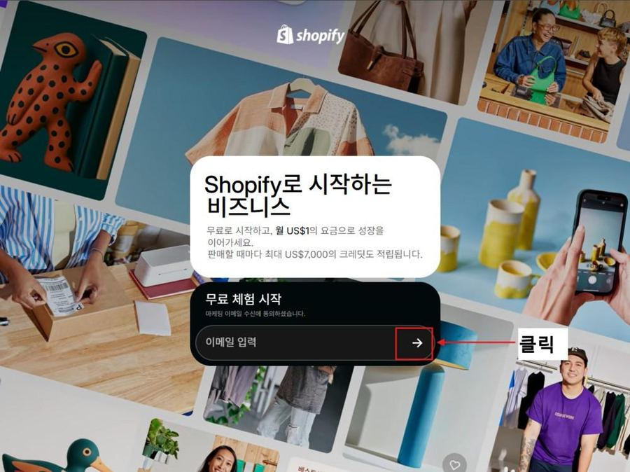
- 해당 대한민국 버튼을 클릭 후 꼭 미국으로 바꿔주세요.
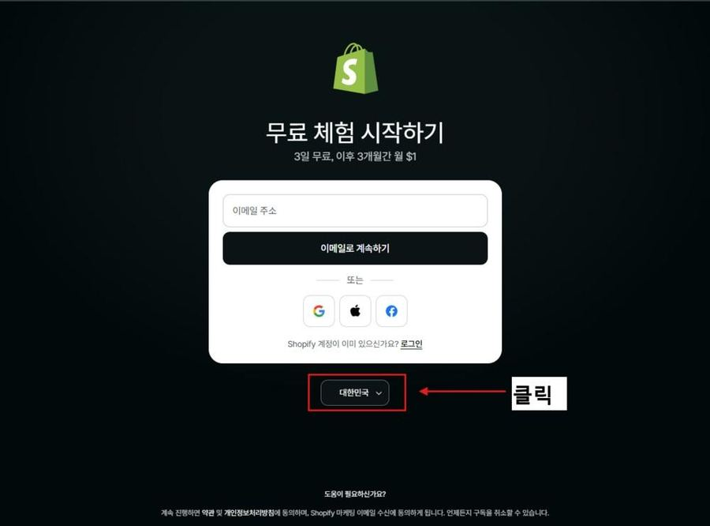
- 미국으로 꼭 변경해주시고, 구글 이메일 기입하여 “이메일로 계속하기” 버튼을 눌러주세요.
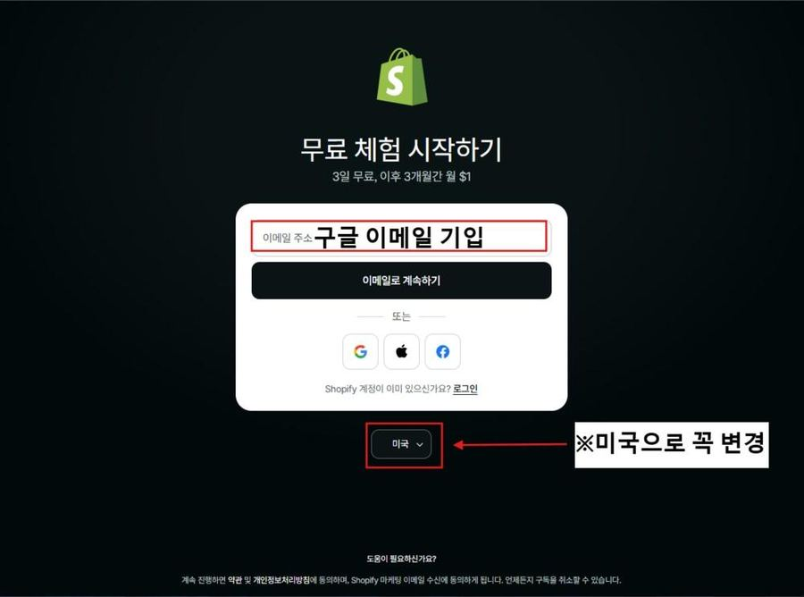
- “새 스토어 생성” 버튼을 눌러주세요.
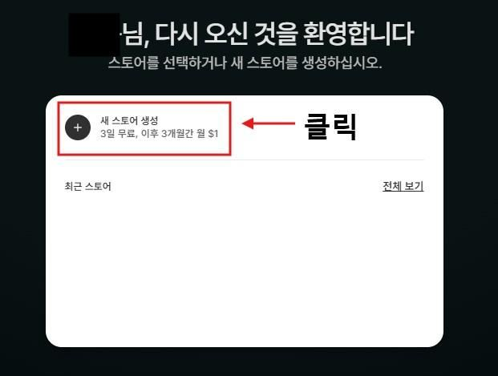
- 카드번호 정보를 기입 후, “$1에 구독” 버튼을 눌러주세요.
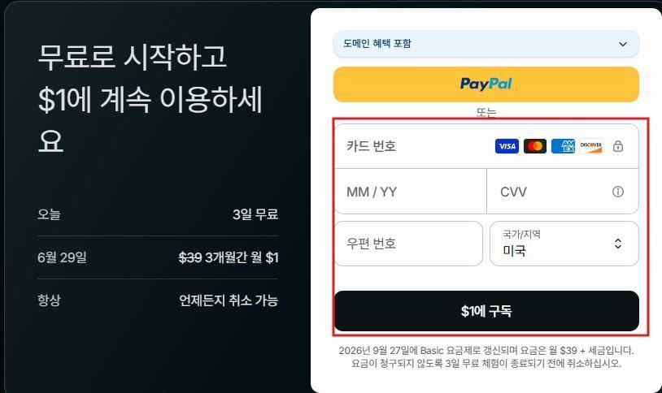
- “온라인 판매” 버튼을 눌러주시고 계속 버튼을 눌러주셔서 샵을 개설해주세요.
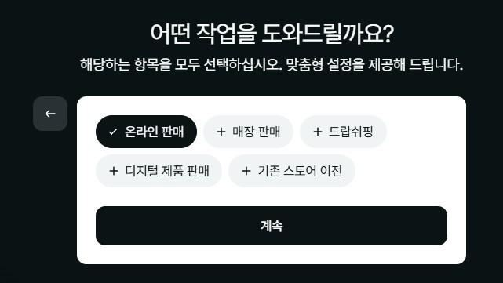
같은 계정에 샵을 개설해주실 때는 미국으로 설정하기 위해서 꼭 1번부터 다시 차례로 진행을 해주셔야 하십니다.쇼피파이 샵에서 “마켓”에 들어가주셨을 때 “미국”으로 되어 있으시면 올바르게 되신 것입니다.
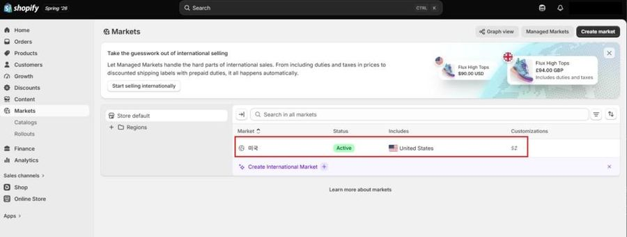
- 미국 스토어로 가입하려면 국가를 어디로 바꿔 주어야 하나요?
- 같은 계정에 샵을 추가할 때는 기존 계정에서 이어서 진행해도 되나요? 왜 그런가요?
- 가입이 올바르게 되었는지 ‘마켓’에서 무엇을 확인하면 되나요?
미국 현지화 실습
세금 및 관세 설정
최종 업데이트 시간: 2026년 7월 1일 오후 4:27
본 매뉴얼은 Shopify 관리자 페이지에서 세금 및 관세 설정을 확인하고, 필요한 지역의 세금 징수를 설정하는 방법 을 안내하기 위해 제작되었습니다.
세금 설정은 고객이 결제할 때 판매세가 정상적으로 계산되도록 하는 중요한 설정입니다.
특히 미국 판매를 진행하는 경우 주(State)별로 세금 징수 기준이 다를 수 있으므로, 스토어 운영 전 반드시 세금 및 관세 설정 화면을 확인해야 합니다.
본 매뉴얼에서는 Shopify의 세금 및 관세 메뉴에서 미국 지역을 확인하고, 세금 책임 검토를 진행한 뒤, 필요한 주의 세금 징수를 활성화하는 과정을 안내합니다.
먼저 Shopify 관리자 페이지에서 왼쪽 메뉴의 세금 및 관세 메뉴로 이동합니다.
세금 및 관세 화면에서는 국가별 세금 설정 상태를 확인할 수 있습니다.
여기서 세금 설정이 필요한 국가를 선택해야 합니다.
예시 화면에서는 북아메리카 > 미국 항목을 클릭합니다.
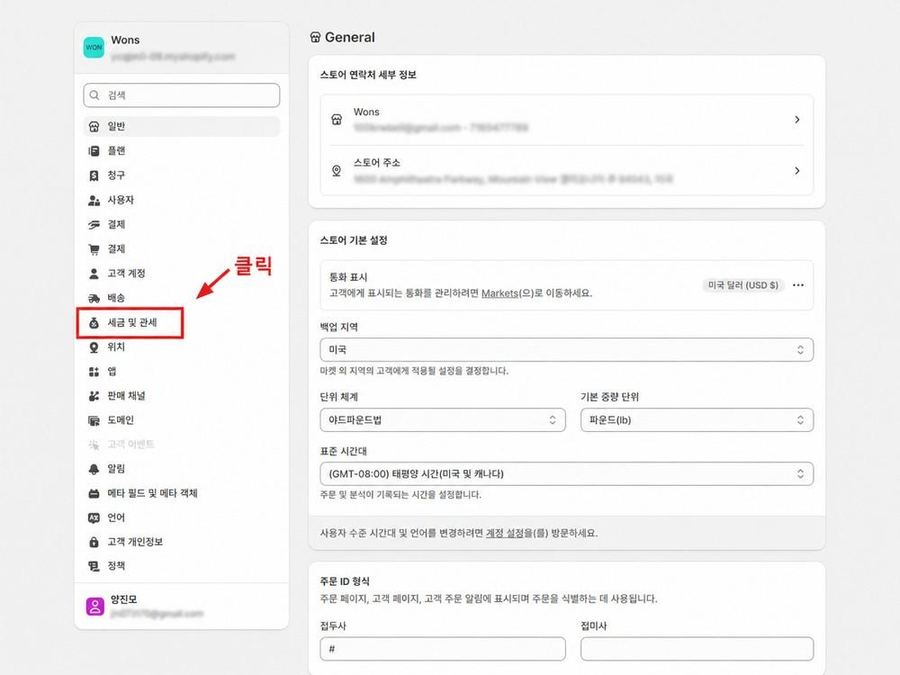
미국 세금 설정 화면으로 이동하면, 현재 스토어의 세금 책임 상태를 확인할 수 있습니다.
이 화면에서는 판매세를 징수해야 할 가능성이 있는 지역을 Shopify가 기준에 따라 검토할 수 있도록 도와줍니다.
세금 책임을 확인하기 위해 검토 시작 버튼을 클릭합니다.
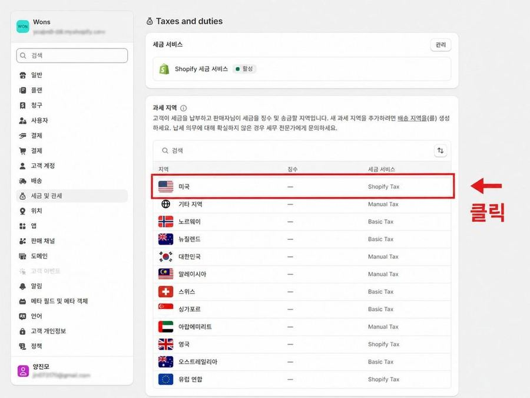
세금 책임 검토 화면이 열리면 세금을 징수할 주 또는 지역을 선택할 수 있습니다.
예시 화면에서는 플로리다 항목을 선택합니다.
체크박스를 클릭하면 해당 주가 선택되며, 선택한 지역은 세금 징수 대상 지역으로 설정할 수 있습니다.
단, 실제 운영 시에는 예시 화면을 그대로 따라 하기보다 본인의 스토어 매출, 거래 수, 운영 기준에 따라 필요한 주를 선택해야 합니다.
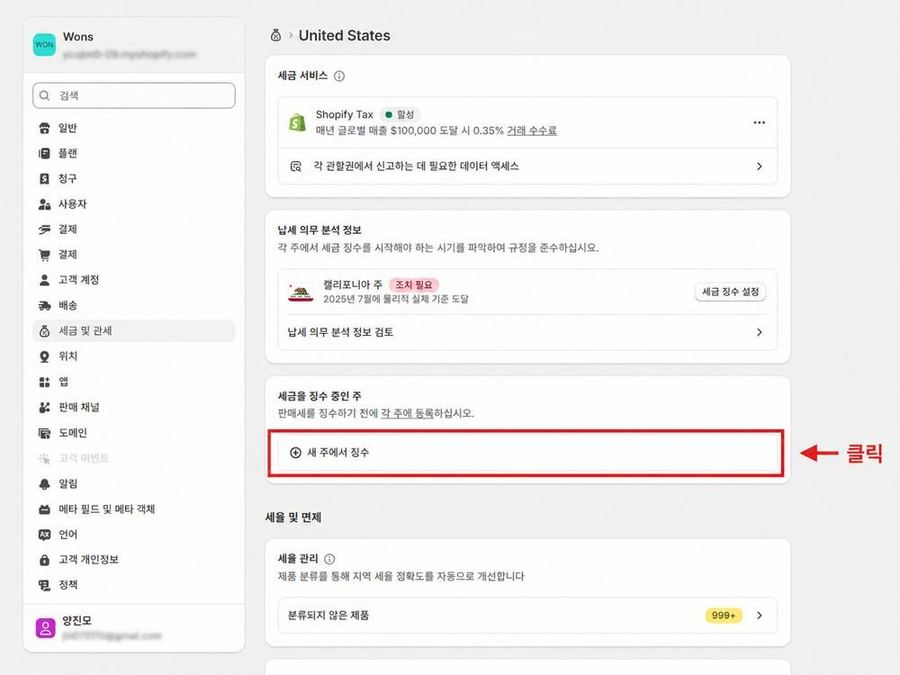
세금 징수할 주를 선택하면 상단 또는 우측에 선택된 지역이 표시됩니다.
선택한 지역이 맞는지 확인한 뒤 세금 징수 버튼을 클릭합니다.
이 버튼을 클릭하면 해당 지역에 대한 판매세 징수 설정 단계로 이동합니다.
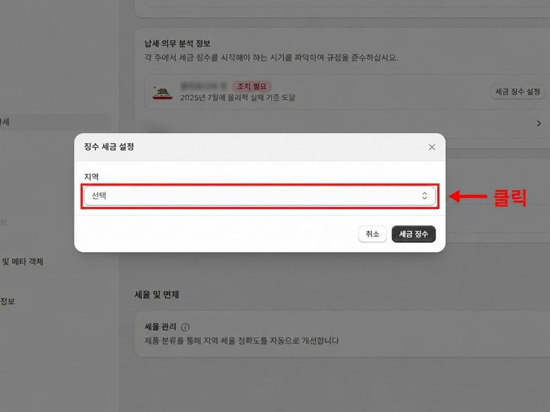
세금 징수 설정 화면에서는 선택한 지역의 세금 징수 시작 정보를 확인합니다.
화면에 표시되는 내용을 확인한 뒤, 필요한 항목을 체크합니다.
예시 화면에서는 책임 확인 체크박스를 선택한 뒤 세금 징수 버튼을 클릭합니다.
이 단계는 실제로 해당 지역의 판매세 징수를 활성화하는 과정이므로, 반드시 선택한 지역이 맞는지 확인한 후 진행해야 합니다.
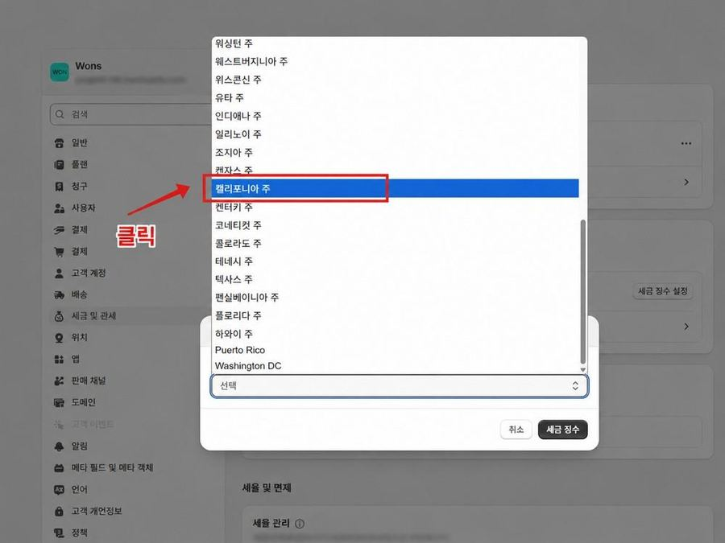
설정이 완료되면 세금 및 관세 화면에서 해당 지역의 세금 징수 상태를 확인할 수 있습니다.
예시 화면처럼 선택한 주가 세금 징수 지역으로 표시되면 설정이 정상적으로 완료된 것입니다.
이후 고객이 해당 지역으로 주문할 경우, Shopify 설정에 따라 결제 화면에서 세금이 계산될 수 있습니다.
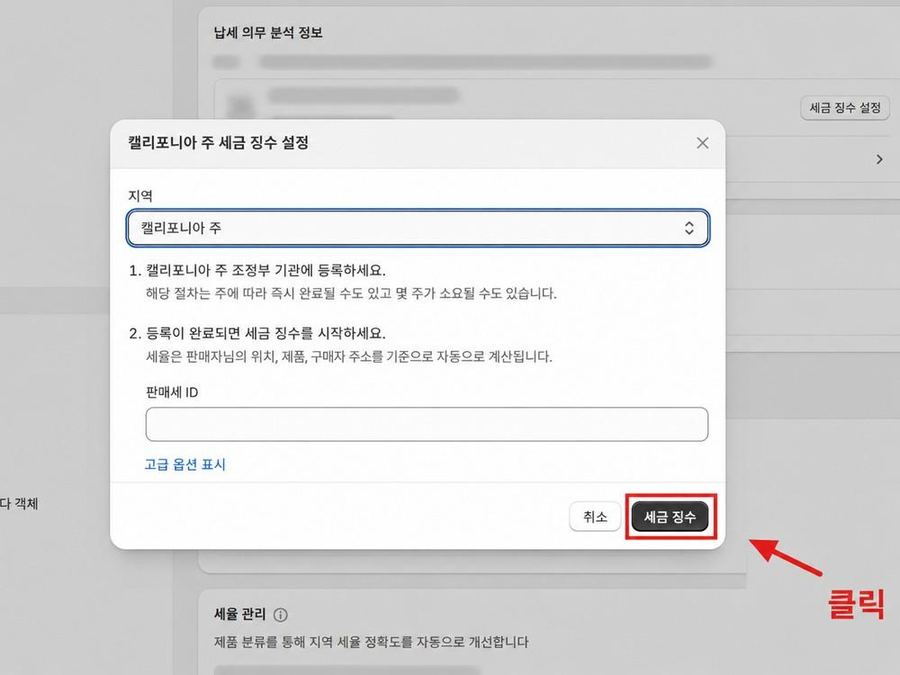
세금 및 관세 설정 시 주의사항
세금 설정은 단순한 화면 설정이 아니라 실제 판매 국가와 지역의 세금 규정과 연결되는 항목입니다.
따라서 세금 징수 지역은 임의로 설정하기보다, 실제 판매 현황과 세금 책임 기준을 확인한 뒤 설정해야 합니다.
특히 미국은 주마다 판매세 기준이 다를 수 있으므로, 특정 주에서 일정 매출 또는 거래 수를 초과한 경우 세금 징수 의무가 발생할 수 있습니다.
처음 설정할 때는 화면의 안내를 기준으로 진행하되, 실제 세금 신고나 납부와 관련된 부분은 담당자 또는 세무 전문가와 확인하는 것이 안전합니다.
최종 확인 체크리스트
세금 및 관세 설정이 끝난 뒤 아래 항목을 확인합니다.
- 세금 및 관세 메뉴에 접속했는지 확인
- 미국 세금 설정 화면으로 이동했는지 확인
- 검토 시작 버튼을 클릭했는지 확인
- 세금 징수가 필요한 주를 선택했는지 확인
- 선택한 지역이 맞는지 확인 후 세금 징수를 진행했는지 확인
- 설정 완료 후 해당 지역이 정상적으로 표시되는지 확인
위 항목이 모두 완료되었다면 기본적인 세금 및 관세 설정 확인 과정은 완료된 것입니다.
- 미국에서 세금 징수 기준이 지역마다 다를 수 있는 이유는 무엇인가요?
- 세금 책임을 확인하려면 어떤 버튼부터 눌러 검토를 시작하나요?
- 예시로 든 주(예: 플로리다)를 그대로 선택하면 되나요, 아니면 무엇을 기준으로 정해야 하나요?
배송 설정
최종 업데이트 시간: 2026년 7월 1일 오후 4:27
본 매뉴얼은 Shopify 스토어 운영 시 고객이 정상적으로 결제를 진행할 수 있도록 배송 지역 및 배송 옵션을 설정하는 방법 을 안내하기 위해 제작되었습니다.
배송 설정은 고객이 상품을 구매할 때 결제 화면에서 배송 가능 여부와 배송비가 표시되도록 하는 필수 설정입니다.
배송 지역이나 배송 옵션이 제대로 설정되어 있지 않으면 고객이 주문을 완료하지 못할 수 있으므로, 스토어 오픈 전 반드시 확인해야 합니다.
본 매뉴얼에서는 기본 배송 프로필을 기준으로 배송 지역을 추가하고, 배송 옵션을 설정한 뒤 최종 저장하는 과정까지 순서대로 안내합니다.
먼저 Shopify 관리자 페이지에서 왼쪽 메뉴의 배송 메뉴로 이동합니다.
배송 설정 화면에 들어오면 배송 프로필 영역이 보입니다.
여기서 기본적으로 생성되어 있는 일반 프로필 을 클릭합니다.
일반 프로필은 기본 배송 설정을 관리하는 영역이며, 별도로 배송 조건을 나누지 않는 경우 대부분 이 프로필에서 설정을 진행하면 됩니다.
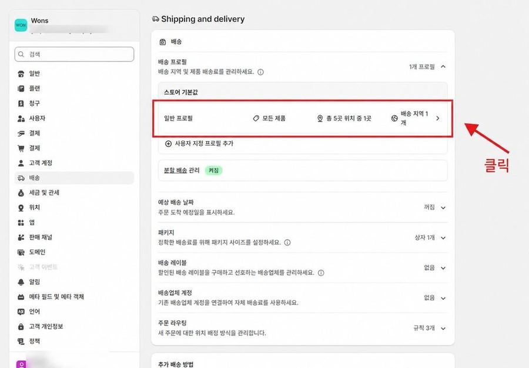
일반 프로필 화면으로 이동하면 현재 상품이 어떤 위치에서 주문 처리되는지 확인할 수 있습니다.
아래쪽의 배송 지역 항목에서 아직 배송 지역이 설정되어 있지 않다면, 고객이 결제할 수 있도록 배송 가능 지역을 추가해야 합니다.
지역 추가 버튼을 클릭합니다.
새 배송 지역 생성 창이 열리면 배송할 국가와 지역을 선택할 수 있습니다.
여기서는 예시로 북아메리카 와 미국 을 선택합니다.
체크박스를 클릭하면 해당 지역이 배송 가능 지역으로 추가됩니다.
미국을 대상으로 판매하는 스토어라면 최소한 미국 은 반드시 선택되어 있어야 합니다.
배송할 국가와 지역을 선택했다면 우측 하단의 완료 버튼을 클릭합니다.
완료를 눌러야 선택한 배송 지역이 프로필에 반영됩니다.
배송 지역을 추가하면 해당 지역 안에 배송 옵션을 추가해야 합니다.
배송 지역만 추가하고 배송 옵션을 설정하지 않으면 고객이 결제 단계에서 배송 방법을 선택할 수 없습니다.
추가된 배송 지역 안에서 배송 옵션 추가 버튼을 클릭합니다.
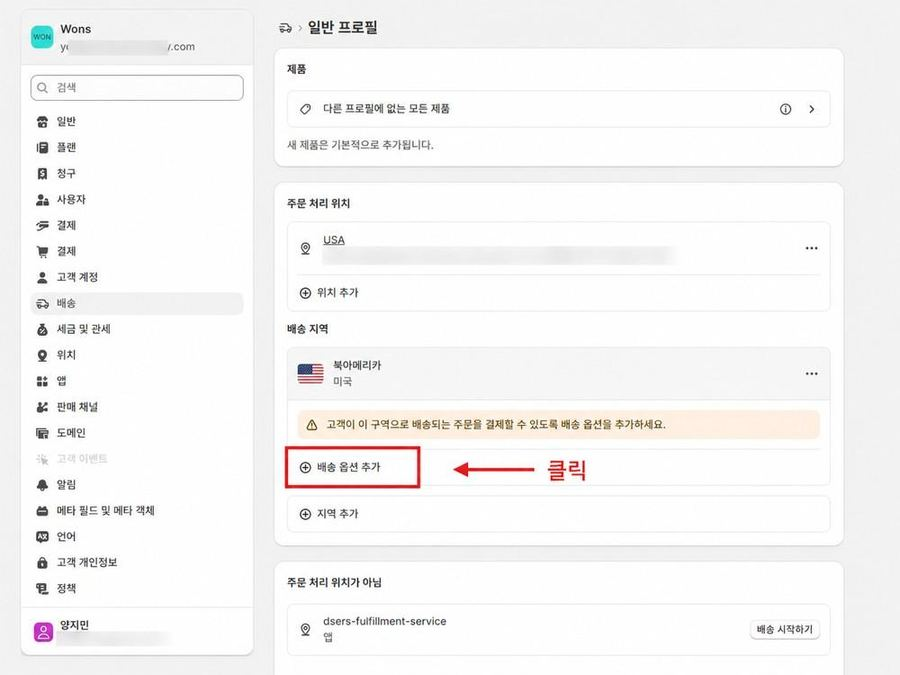
배송 옵션 추가 화면에서는 고객에게 보여질 배송 방법을 설정합니다.
예시 기준으로 아래와 같이 입력합니다.
- 이름: 이코노미
- 요금 유형: 고정
- 요금: $7.90
- 운송 시간: 3 ~ 5 영업일
이름은 고객 결제 화면에 표시되는 배송 옵션명입니다.
요금은 고객이 결제할 배송비이며, 운송 시간은 예상 배송 기간입니다.
설정이 완료되면 우측 상단의 완료 버튼을 클릭합니다.
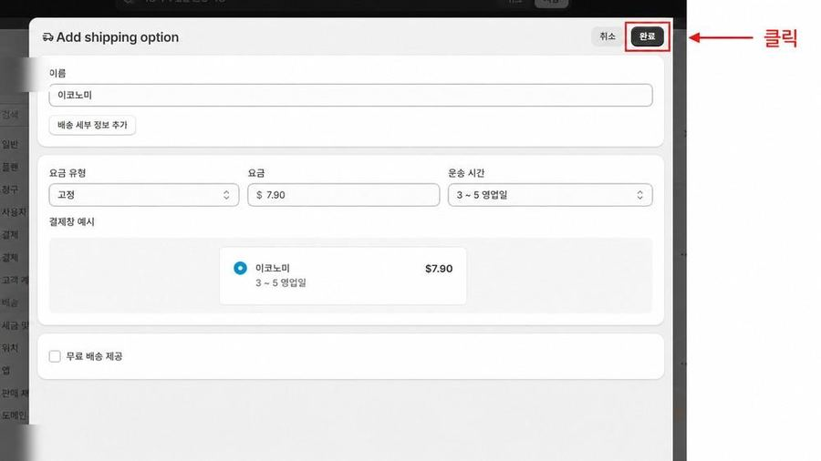
배송 옵션은 운영 방식에 맞게 자유롭게 변경할 수 있습니다.
예를 들어 무료 배송으로 운영하고 싶다면 요금을 $0.00 으로 설정할 수 있고, 유료 배송으로 운영하고 싶다면 원하는 금액을 입력하면 됩니다.
또한 배송 기간도 실제 공급처의 배송 기간에 맞춰 조정해야 합니다.
예시로는 3~5 영업일 로 설정되어 있지만, 실제 배송 기간이 더 길다면 고객 문의를 줄이기 위해 현실적인 기간으로 설정하는 것이 좋습니다.
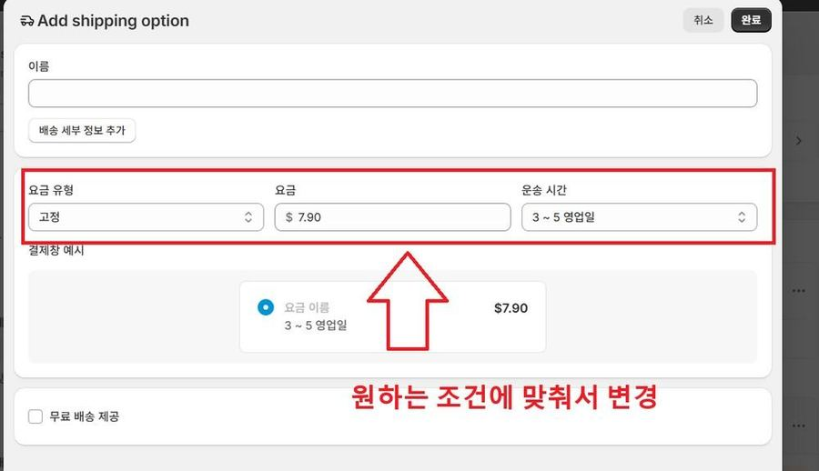
배송 지역과 배송 옵션을 모두 추가했다면 마지막으로 우측 상단의 저장 버튼을 클릭합니다.
저장을 누르지 않으면 지금까지 설정한 내용이 반영되지 않을 수 있습니다.
저장 후에는 배송 지역 안에 설정한 배송 옵션이 정상적으로 표시되는지 확인합니다.
예시 화면처럼 이코노미 / 영업일 기준 3~5일 / $7.90 이 표시되면 배송 옵션이 정상적으로 추가된 것입니다.
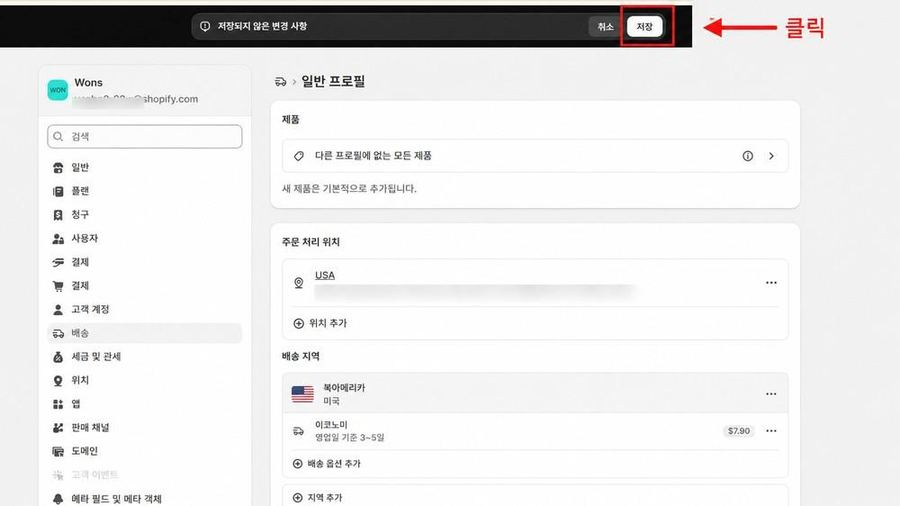
최종 확인 체크리스트
배송 설정이 끝난 뒤 아래 내용을 확인합니다.
- 일반 프로필에 접속했는지 확인
- 배송 지역이 추가되어 있는지 확인
- 미국 또는 판매할 국가가 선택되어 있는지 확인
- 배송 옵션이 추가되어 있는지 확인
- 배송 옵션 이름, 요금, 운송 시간이 입력되어 있는지 확인
- 마지막에 저장 버튼을 눌렀는지 확인
위 항목이 모두 완료되었다면 Shopify 기본 배송 설정은 정상적으로 완료된 것입니다.
- 배송 지역/배송 프로필을 설정하는 이유는 무엇인가요?
- 미국 내 배송을 위해 어떤 지역을 배송 대상으로 추가해야 하나요?
- 배송비 요금은 어떤 방식으로 설정할 수 있나요?
마켓 설정
최종 업데이트 시간: 2026년 6월 24일 오후 8:16
본 매뉴얼은 Shopify 관리자 페이지에서 Markets(마켓) 을 생성하고, 판매 대상 국가를 추가하는 방법을 안내하기 위해 제작되었습니다.
마켓 설정은 스토어에서 판매할 국가와 지역을 관리하는 기본 설정입니다.
마켓이 제대로 설정되어 있지 않으면 특정 국가의 고객이 스토어에 접속하거나 결제하는 과정에서 국가, 통화, 언어, 배송 조건 등이 정상적으로 적용되지 않을 수 있습니다.
본 매뉴얼에서는 미국 판매를 기준으로 새로운 마켓을 생성하고, 조건에 미국을 추가한 뒤 저장하는 과정까지 순서대로 안내합니다.
먼저 Shopify 관리자 페이지에 접속합니다.
왼쪽 메뉴에서 Markets 를 클릭합니다.
Markets 메뉴에서는 스토어가 판매할 국가 및 지역을 관리할 수 있습니다.
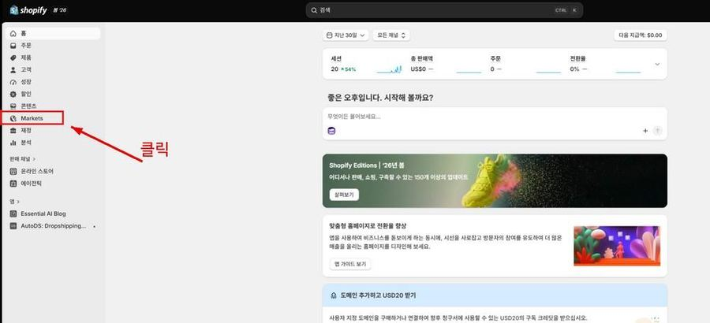
Markets 화면으로 이동하면 현재 생성되어 있는 마켓 목록을 확인할 수 있습니다.
새로운 판매 국가 또는 지역을 추가하려면 우측 상단의 마켓 생성 버튼을 클릭합니다.
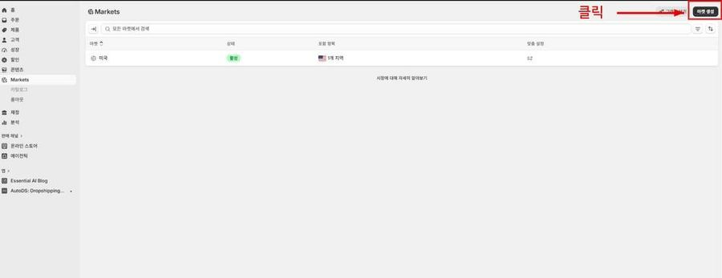
새 마켓 생성 화면으로 이동하면 마켓 이름과 조건을 설정할 수 있습니다.
이 단계에서는 해당 마켓에 어떤 국가 또는 지역을 포함할지 설정해야 합니다.
조건 항목에서 조건 추가 버튼을 클릭합니다.
⟪이미지 로드 실패: 03_조건추가_클릭.jpg⟫
마켓 조건 창이 열리면 포함할 국가 또는 지역을 검색할 수 있습니다.
검색창에 미국 을 입력한 뒤, 목록에서 미국 항목의 체크박스를 클릭합니다.
미국 고객을 대상으로 판매할 경우, 이 단계에서 반드시 미국이 선택되어야 합니다.
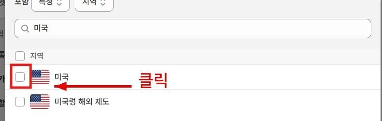
미국 항목이 선택되었는지 확인한 뒤 우측 하단의 완료 버튼을 클릭합니다.
완료 버튼을 눌러야 선택한 국가가 새 마켓 조건에 반영됩니다.
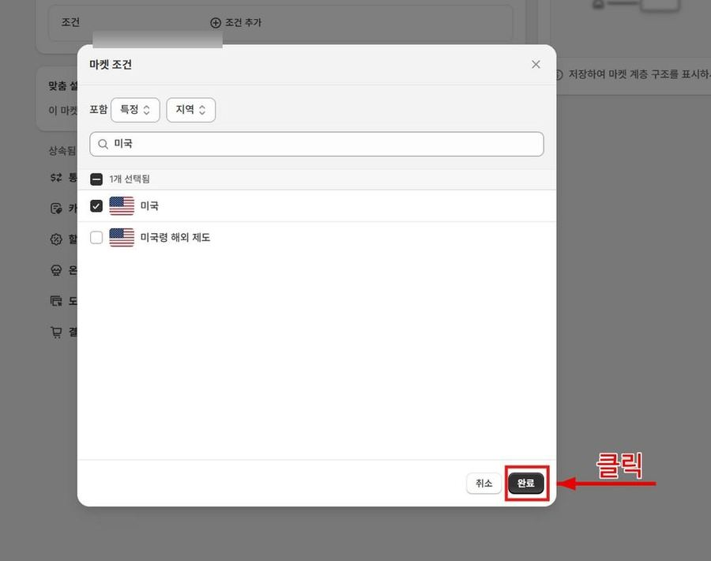
조건에 미국이 추가된 것을 확인한 뒤, 화면 상단의 저장 버튼을 클릭합니다.
저장을 누르지 않으면 새로 생성한 마켓 설정이 반영되지 않을 수 있으므로 반드시 저장까지 진행해야 합니다.
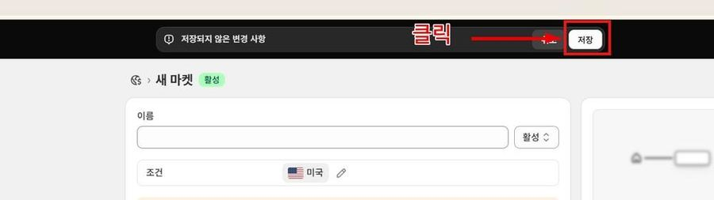
저장이 완료되면 Markets 목록 화면으로 돌아와 새로 생성된 마켓을 확인합니다.
예시 화면처럼 미국 마켓이 표시되고, 상태가 활성 으로 보이면 정상적으로 생성된 것입니다.
또한 포함 항목에 1개 지역 이 표시되면 미국이 마켓 조건에 정상적으로 추가된 상태입니다.
마켓 설정 시 주의사항
마켓 설정은 판매 국가, 통화, 언어, 도메인, 결제 및 배송 설정과 연결되는 기본 설정입니다.
미국 판매를 기준으로 운영하는 경우에는 미국 마켓이 활성화되어 있어야 하며, 이후 배송 설정과 세금 및 관세 설정에서도 미국이 정상적으로 연결되어 있는지 확인해야 합니다.
마켓만 생성했다고 모든 설정이 끝나는 것은 아니므로, 마켓 설정 후에는 배송 지역, 배송 옵션, 세금 및 관세 설정까지 함께 확인하는 것이 좋습니다.
최종 확인 체크리스트
마켓 설정이 끝난 뒤 아래 내용을 확인합니다.
- Shopify 관리자 페이지에서 Markets 메뉴에 접속했는지 확인
- 마켓 생성 버튼을 클릭했는지 확인
- 조건 추가 버튼을 클릭했는지 확인
- 국가 또는 지역에서 미국을 선택했는지 확인
- 완료 버튼을 눌러 조건을 반영했는지 확인
- 저장 버튼을 클릭했는지 확인
- Markets 목록에서 미국 마켓이 활성 상태로 표시되는지 확인
위 항목이 모두 완료되었다면 Shopify 마켓 설정은 정상적으로 완료된 것입니다.
- ‘마켓(Market)’ 메뉴에서 관리하는 핵심 항목은 무엇인가요?
- 미국 판매를 위해 기본 마켓/통화를 어떻게 맞춰야 하나요?
- 마켓 설정이 현지화에서 중요한 이유를 한 문장으로 정리해 보세요.
PART
3-2
스토어 기획
본격적인 디자인 전에, 어떤 상품을 어떤 구조로 보여줄지 먼저 설계합니다. 소싱 방향, 메가메뉴, 메인 페이지, 푸터를 미리 정해 두면 이후 작업이 훨씬 빨라집니다.
스토어 구상
스토어를 만들기 전에 ‘무엇을, 어떻게 보여줄지’를 먼저 설계합니다. 여기서 정한 소싱·메뉴·메인·푸터 방향이 이후 디자인 작업의 기준이 됩니다.
① 샵 상품 소싱 — 무엇을 팔 것인가
운영할 샵의 종류와 그 이유를 먼저 정합니다. 예를 들어 건강기능식품샵, 가구샵, 운동용품샵처럼 구체적인 방향을 잡습니다. ‘왜 이 상품인가’를 근거와 함께 적어 두면(예: 미국은 성인병·만성질환 비율이 높아 건강기능식품 수요가 크다) 이후 메뉴·메인·상세페이지 구성이 훨씬 명확해집니다.
② 메가메뉴 — 어떻게 분류할 것인가
고객이 원하는 상품군을 빠르게 찾도록 상단 메가메뉴 구조를 설계합니다. 벤치마킹한 스토어의 메뉴를 참고하되, 메뉴(카테고리) 개수는 50개 이상 으로 넉넉히 잡는 것을 권장합니다. 대분류–중분류–소분류로 나눠 두면 상품이 늘어나도 구조가 무너지지 않습니다.
③ 메인 페이지 — 첫 화면 구성
메인에 어떤 섹션을 어떤 순서로 배치할지 정합니다. 히어로 배너, 카테고리 바로가기, 추천/신상품, 브랜드 스토리 등에서 무엇을 위에 둘지 미리 정해 두면 디자인 단계가 빨라집니다. 벤치마킹한 화면이 있다면 캡처해 두고 ‘이런 느낌’으로 기준을 잡습니다.
④ 푸터(Footer) — 하단 안내
모든 페이지 하단에 공통으로 들어갈 내용을 정합니다. 배송·환불·개인정보 등 정책 링크, 고객센터, 회사 정보, SNS 링크 등이 대표적입니다. 신뢰와 관련된 요소이므로 초기부터 빠짐없이 넣는 것이 좋습니다.
구상 계획서 — 아래 항목을 채워 정리해 보세요
- 스토어를 만들기 전에 ‘구상(기획)’을 먼저 하는 이유는 무엇인가요?
- 메가메뉴는 최소 몇 개 이상으로 구성하는 것이 권장되나요?
- 메인 페이지와 푸터에 각각 어떤 요소를 넣으면 좋을지 정리해 보세요.
PART
3-3
상품 업로드
상품을 실제 판매 가능한 상태로 등록하는 파트입니다. 소싱 앱 활용, 상품 업로드, 컬렉션 설정 등이 여기에 포함됩니다.
3-3-1 자료 준비 중
자료 준비 중
이 파트의 실습 자료는 현재 준비 중입니다.
이후 상품 소싱 앱(예: 스파크) · 상품 업로드 · 컬렉션 설정 매뉴얼이 이 자리에 추가될 예정입니다.
PART
3-4
스토어 디자인
고객이 실제로 보는 화면을 완성하는 파트입니다. 상단 메뉴부터 메인 배너, 카테고리, 추천/신상품, 브랜드 정보, 블로그, 리뷰, 쿠키 배너까지 하나씩 만들어 스토어의 얼굴을 갖춥니다.
소싱 앱 소개
스파크 사용법
상품 업로드
컬렉션 설정
파비콘 · 로고
메인 배너
최종 업데이트 시간: 2026년 7월 1일 오후 4:33
본 매뉴얼은 Shopify 스토어 홈 화면 상단에 노출되는 히어로 배너를 PageFly에서 제작하는 방법을 안내합니다.
배너 이미지 설정, 문구 입력, 버튼 추가, 버튼 링크 연결, PC/모바일 화면 확인까지 순서대로 진행합니다.
히어로 배너는 고객이 스토어에 접속했을 때 가장 먼저 보이는 영역입니다.
브랜드 분위기와 핵심 메시지를 전달하고, 고객이 원하는 페이지로 이동할 수 있도록 버튼을 연결하는 것이 목적입니다.
이번 작업에서는 아래 내용을 진행합니다.
- PageFly에서 홈 페이지 배너 영역 생성
- 배너 배경 이미지 적용
- 메인 문구와 보조 문구 입력
- 버튼 생성 및 링크 연결
- 저장 후 실제 화면에서 정상 노출 여부 확인
PageFly 앱에 접속한 뒤, 왼쪽 메뉴에서 Home Pages를 클릭합니다.
Home Pages는 쇼핑몰 메인 화면을 제작하는 메뉴입니다.
기존에 생성된 홈 페이지가 있다면 해당 페이지를 수정할 수 있고, 새로 만들 수도 있습니다.
Home Pages 화면에서 사용할 템플릿을 선택합니다.
템플릿은 처음부터 빈 화면으로 제작하지 않고, 기본 구조를 참고해서 작업할 수 있도록 제공되는 샘플 페이지입니다.
히어로 배너 제작이 목적이라면 상단 배너가 포함된 템플릿을 선택하는 것이 좋습니다.
기존에 생성된 페이지가 필요 없다면 삭제 버튼을 클릭합니다.
삭제 확인 창이 뜨면 Confirm 또는 확인 버튼을 클릭합니다.
불필요한 페이지를 정리하면 작업 중 헷갈리지 않고, 새 페이지 제작이 더 편해집니다.
빈 화면이 열리면 Add section 버튼을 클릭합니다.
Add section은 페이지 안에 새로운 영역을 추가하는 버튼입니다.
히어로 배너는 보통 홈 화면 가장 상단에 들어가므로, 페이지 상단에 섹션을 먼저 추가합니다.
왼쪽 Elements 메뉴에서 Banner 요소를 선택하거나 드래그하여 페이지에 추가합니다.
Banner는 배경 이미지를 크게 넣고, 그 위에 문구와 버튼을 배치할 수 있는 영역입니다.
히어로 배너를 만들 때 가장 기본적으로 사용하는 요소입니다.
배너 영역을 클릭한 뒤, 오른쪽 설정 패널에서 Background 또는 Banner image 항목을 확인합니다.
Pick 버튼을 클릭하여 사용할 이미지를 선택합니다.
이미지 선택 창이 열리면 My assets 또는 업로드된 이미지 목록에서 원하는 이미지를 선택합니다.
이미지는 쇼핑몰 분위기와 맞는 이미지를 사용하는 것이 좋습니다.
예를 들어 건강식품 쇼핑몰이라면 자연, 건강, 신뢰감, 깨끗함이 느껴지는 이미지를 사용하는 것이 좋습니다.
배경 이미지가 들어간 뒤, 오른쪽 설정 패널에서 Vertical 값을 조정합니다.
Vertical 값은 배경 이미지가 위아래로 보이는 위치를 조정하는 설정입니다.
이미지의 중요한 부분이 잘 보이도록 값을 조정합니다.
예시 설정값:
- Vertical: 33%
- Horizontal: center
이미지 위치가 어색하면 Vertical 값을 조금씩 움직이면서 가장 자연스러운 위치를 찾습니다.
배너가 너무 크거나 작게 보이면 Height 값을 조정합니다.
예시 설정값:
- Height: 230px
단, 스토어 분위기나 이미지 비율에 따라 높이는 달라질 수 있습니다.
상단 배너는 너무 낮으면 임팩트가 약하고, 너무 높으면 아래 콘텐츠가 잘 보이지 않으므로 적당한 높이로 조정합니다.
배너 안에 문구와 버튼을 넣기 위해 Row를 추가합니다.
Row는 배너 안에서 문구와 버튼을 배치할 수 있는 구조입니다.
배너 배경만 넣으면 고객에게 전달되는 메시지가 부족하기 때문에, Row를 추가해서 텍스트와 버튼을 넣어줍니다.
Row를 선택한 뒤, 오른쪽 Layout 설정에서 컬럼 구조를 선택합니다.
가운데에 문구와 버튼을 배치하려면 중앙 컬럼이 넓은 구조를 선택하면 좋습니다.
추천 구조:
- 3 / 6 / 3
- 4 / 4 / 4
가운데 컬럼에 문구와 버튼을 넣으면 배너 중앙 정렬이 쉬워집니다.
왼쪽 Elements 메뉴에서 Heading을 배너 안쪽 가운데 영역으로 추가합니다.
Heading은 배너에서 가장 크게 보이는 메인 문구입니다.
고객이 처음 봤을 때 브랜드 콘셉트가 바로 전달될 수 있도록 짧고 강하게 작성합니다.
예시 문구:
MODERN ROOTS LIFE
Heading 영역을 클릭한 뒤, 원하는 문구로 수정합니다.
문구 예시:
MODERN ROOTS LIFE
또는 건강식품 스토어라면 아래처럼 작성할 수 있습니다.
예시:
- HEALTHY LIFE STARTS HERE
- DAILY WELLNESS FOR YOU
- NATURAL CARE FOR YOUR BODY
- PREMIUM HEALTH PRODUCTS
Heading을 선택한 상태에서 오른쪽 설정 패널에서 Typography를 조정합니다.
추천 설정:
- Font color: #FFFFFF
- Font size: 50px
- Font weight: Bold
- Text alignment: Center
배경 이미지가 어두운 경우 흰색 글씨가 잘 보입니다.
배경이 밝은 이미지라면 검정색 또는 진한 색상으로 변경해도 됩니다.
Heading 아래에 Text 요소를 추가하여 보조 문구를 입력합니다.
보조 문구는 메인 문구를 보완해주는 짧은 설명입니다.
너무 길게 작성하지 않고, 한 줄 또는 두 줄 정도로 작성하는 것이 좋습니다.
예시 문구:
LAB TESTED PRODUCTS AND KNOWLEDGE YOU CAN TRUST, IN A WORLD YOU CAN’T.
건강식품 스토어 예시:
우리 몸에 필요한 다양한 건강 솔루션을 만나보세요.
Text 요소를 클릭한 뒤 오른쪽 설정에서 글자 크기와 색상을 조정합니다.
추천 설정:
- Font size: 12px ~ 16px
- Text color: #FFFFFF
- Text alignment: Center
- Line height: 1.4em
보조 문구는 메인 문구보다 작게 설정하는 것이 좋습니다.
메인 문구보다 크면 배너의 중심이 흐려질 수 있습니다.
왼쪽 Elements 메뉴에서 Button을 배너 안쪽 가운데 영역에 추가합니다.
버튼은 고객을 특정 페이지로 이동시키는 역할을 합니다.
히어로 배너에서는 보통 전체 상품 페이지, 컬렉션 페이지, 이벤트 페이지 등으로 연결합니다.
Button을 클릭한 뒤 버튼 문구를 수정합니다.
예시 문구:
SHOP ALL PRODUCTS
또는 한국어 쇼핑몰에서는 아래처럼 작성할 수 있습니다.
예시:
- 전체 상품 보기
- 지금 쇼핑하기
- 상품 보러가기
- 컬렉션 보기
Button을 선택한 상태에서 오른쪽 설정 패널의 Button link 항목에 이동할 링크를 입력합니다.
예시 링크:
/collections/vitamin
위 링크를 입력하면 버튼 클릭 시 Vitamin 컬렉션 페이지로 이동합니다.
링크 입력 시 주의사항:
- 내부 컬렉션 이동은 /collections/컬렉션핸들 형식으로 입력
- 새 창으로 열 필요가 없으면 Open link in new tab은 꺼두기
- 링크 입력 후 미리보기에서 실제 이동이 되는지 확인하기
Button을 선택한 상태에서 오른쪽 Color 설정을 수정합니다.
추천 설정:
- Text color: #FFFFFF
- Button color: #000000
- Font size: 16px
- Text alignment: Center
강조가 필요한 경우 버튼 색상을 빨간색 계열로 변경할 수 있습니다.
예시:
- Button color: #FF2424
- Text color: #FFFFFF
단, 배너 이미지와 어울리는 색상을 선택해야 합니다.
너무 튀는 색상은 전체 디자인을 어색하게 만들 수 있습니다.
미리보기 화면에서 상단 메뉴 또는 버튼을 클릭하여 링크가 정상적으로 연결되는지 확인합니다.
버튼을 클릭했을 때 지정한 컬렉션 페이지로 이동하면 정상입니다.
이동이 되지 않는 경우 Button link에 입력한 주소를 다시 확인합니다.
작업이 끝나면 오른쪽 상단의 Save 버튼을 클릭합니다.
저장이 완료되면 Page saved successfully 또는 Published 문구가 표시됩니다.
저장하지 않으면 작업한 내용이 반영되지 않을 수 있으므로, 수정 후에는 반드시 저장합니다.
Preview 버튼을 클릭하여 실제 고객이 보는 화면을 확인합니다.
확인할 내용:
- 배너 이미지가 정상적으로 보이는지
- 문구가 배경과 겹쳐서 안 보이지 않는지
- 버튼이 중앙에 잘 배치되어 있는지
- 버튼 클릭 시 원하는 페이지로 이동하는지
- PC 화면에서 디자인이 어색하지 않은지
상단의 모바일 아이콘을 클릭하여 모바일 화면에서도 확인합니다.
모바일에서는 PC보다 화면 폭이 좁기 때문에 문구가 줄바꿈되거나 버튼이 아래로 내려갈 수 있습니다.
모바일 화면에서 문구가 너무 크다면 Font size를 줄여줍니다.
모바일 확인 시 체크할 부분:
- 배너 이미지가 잘리지 않는지
- 문구가 화면 밖으로 나가지 않는지
- 버튼이 정상적으로 보이는지
- 화면 스크롤 시 어색하지 않은지
스토어 미리보기 또는 실제 페이지에서 최종 화면을 확인합니다.
정상적으로 적용되면 상단에 배너 이미지, 메인 문구, 보조 문구, 버튼이 함께 노출됩니다.
완성 예시 구성:
- 배경 이미지: 도시 야경 또는 브랜드 분위기 이미지
- 메인 문구: MODERN ROOTS LIFE
- 보조 문구: LAB TESTED PRODUCTS AND KNOWLEDGE YOU CAN TRUST
- 버튼 문구: SHOP ALL PRODUCTS
- 버튼 링크: /collections/vitamin
히어로 배너에 들어갈 문구가 고민될 경우 ChatGPT를 활용할 수 있습니다.
예시 입력문:
나는 쇼핑몰을 운영하고 있어요.
건강식품 쇼핑몰에 어울리는 히어로 배너 문구를 만들어줘.
고객이 신뢰감을 느낄 수 있고, 건강하고 깔끔한 느낌이 나도록 해줘.
배너 이미지나 문구의 방향성이 정해지지 않았다면 아래처럼 요청할 수 있습니다.
예시 입력문:
나는 쇼핑몰의 유입률을 올리고 싶어.
건강식품 쇼핑몰에 어울리는 홈 화면 히어로 배너 콘셉트 5가지를 추천해줘.
각 콘셉트마다 메인 문구, 보조 문구, 버튼 문구까지 같이 알려줘.
배너에 사용할 이미지가 필요할 경우, 원하는 이미지 분위기를 구체적으로 작성합니다.
예시 입력문:
건강식품 쇼핑몰 히어로 배너에 사용할 이미지를 만들고 싶어.
자연스럽고 깨끗한 분위기, 건강한 느낌, 신뢰감 있는 톤으로 배경 이미지 콘셉트를 추천해줘.
직접 이미지를 찾을 경우 무료 이미지 사이트를 활용할 수 있습니다.
이미지 검색 시 추천 키워드:
- wellness
- health product
- natural supplement
- vitamin
- healthy lifestyle
- skincare nature
- organic product
- clean background
이미지는 쇼핑몰 제품군과 분위기가 맞아야 합니다.
너무 복잡한 이미지는 문구가 잘 보이지 않을 수 있으므로, 배경이 깔끔한 이미지를 선택하는 것이 좋습니다.
히어로 배너 제작 후 아래 항목을 최종 확인합니다.
- 배너 이미지가 정상적으로 들어갔는가?
- 이미지 위치가 어색하지 않은가?
- 메인 문구가 잘 보이는가?
- 보조 문구가 너무 길지 않은가?
- 버튼 문구가 명확한가?
- 버튼 링크가 정상적으로 연결되는가?
- PC 화면에서 자연스럽게 보이는가?
- 모바일 화면에서도 깨지지 않는가?
- 저장 및 게시가 완료되었는가?
1) 배너 이미지가 이상한 위치로 잘려 보이는 경우
Vertical 값을 조정합니다.
이미지의 중요한 부분이 위나 아래로 잘려 보이면 Vertical 값을 조금씩 변경하며 확인합니다.
2) 문구가 배경 때문에 잘 안 보이는 경우
문구 색상을 흰색 또는 검정색으로 변경합니다.
배경이 복잡하다면 어두운 오버레이가 있는 이미지를 사용하거나, 문구가 들어갈 부분이 비어 있는 이미지를 선택합니다.
3) 버튼이 너무 작게 보이는 경우
Button의 Font size와 Padding 값을 조정합니다.
버튼은 고객이 클릭할 수 있어야 하므로 너무 작게 만들지 않는 것이 좋습니다.
4) 모바일에서 문구가 깨지는 경우
모바일 화면에서 Font size를 줄이고, 문구를 짧게 수정합니다.
히어로 배너 문구는 PC보다 모바일에서 더 짧고 간결해야 합니다.
5) 버튼 클릭이 안 되는 경우
Button link가 정상적으로 입력되어 있는지 확인합니다.
예를 들어 Vitamin 컬렉션으로 이동하려면 아래처럼 입력합니다.
/collections/vitamin
히어로 배너는 쇼핑몰 첫인상을 결정하는 중요한 영역입니다.
배경 이미지, 문구, 버튼이 자연스럽게 어우러져야 고객이 스토어를 신뢰하고 상품 페이지로 이동할 가능성이 높아집니다.
작업 후에는 반드시 PC 화면과 모바일 화면을 모두 확인하고, 버튼 링크까지 테스트한 뒤 최종 저장합니다.
- 히어로 배너는 어떤 도구(앱)로 제작하나요?
- 배경 이미지를 넣은 뒤 조정하는 항목 두 가지는 무엇인가요?
- 배너 안에 문구를 넣으려면 어떤 요소들을 추가하나요?
카테고리 바로가기
최종 업데이트 시간: 2026년 7월 6일 오후 12:59
본 매뉴얼은 Shopify 관리자 화면과 테마 편집기, PageFly를 활용하여 쇼핑몰 메인 또는 별도 페이지에 카테고리 바로가기 영역을 구성하는 방법을 안내합니다.
카테고리 바로가기는 고객이 원하는 상품군으로 빠르게 이동할 수 있도록 도와주는 메뉴형 콘텐츠입니다.
이번 예시에서는 `Vitamin`, `Vitamin B`, `Vitamin C`, `Gut Health` 등의 카테고리를 이미지 카드 또는 버튼 형태로 구성하고, 각 카테고리 페이지 또는 상품 리스트 페이지로 연결하는 방식으로 진행합니다.
카테고리 바로가기를 만들기 전, 연결할 상품과 컬렉션이 먼저 준비되어 있어야 합니다.
Shopify 관리자 화면에서 제품 > 컬렉션 또는 제품 목록 으로 이동하여 상품이 정상적으로 등록되어 있는지 확인합니다.
상품 상태가 활성 으로 되어 있어야 하며, 각 상품은 연결할 컬렉션에 포함되어 있어야 합니다.
2-1. 페이지 추가 화면 확인
Shopify 관리자 화면에서 온라인 스토어 > 페이지 로 이동합니다.
페이지가 없는 경우 페이지 추가 버튼을 클릭하여 새 페이지를 생성합니다.
2-2. 페이지 제목 입력
페이지 제목에는 예시처럼 `Vitamin Collections List`를 입력합니다.
해당 페이지는 고객이 카테고리 목록을 확인하고 원하는 컬렉션으로 이동할 수 있는 카테고리 바로가기 페이지로 사용됩니다.
2-3. 공개 상태 확인
오른쪽의 공개 상태 가 공개 로 설정되어 있는지 확인합니다.
숨김 상태로 되어 있으면 고객이 해당 페이지를 볼 수 없으므로 반드시 공개 상태로 설정해야 합니다.
2-4. 템플릿 확인
처음 페이지를 생성할 때는 템플릿이 기본 페이지 로 설정되어 있어도 괜찮습니다.
이후 테마 편집기에서 별도 템플릿을 생성한 뒤 해당 페이지에 다시 연결합니다.
2-5. 검색 엔진 목록 확인
페이지 하단의 검색 엔진 목록 에서는 고객에게 노출될 페이지 제목, 설명, URL 정보를 확인할 수 있습니다.
필요한 경우 검색 엔진 목록을 수정하여 페이지가 더 깔끔하게 보이도록 설정합니다.
3-1. 테마 사용자 지정 클릭
온라인 스토어 > 테마 로 이동한 뒤, 현재 사용 중인 테마의 사용자 지정 버튼을 클릭합니다.
3-2. 새 템플릿 이름 입력
상단의 페이지 또는 템플릿 선택 영역에서 새 템플릿을 생성합니다.
템플릿 이름은 예시처럼 `Vitamin Collection` 또는 `vitamin-collections-list`처럼 구분하기 쉬운 이름으로 입력합니다.
3-3. 템플릿 생성 클릭
기준은 기본 페이지 로 설정한 뒤 템플릿 생성 버튼을 클릭합니다.
3-4. 새 템플릿 화면 확인
템플릿이 생성되면 기본 페이지 형태의 화면이 표시됩니다.
이제 해당 템플릿 안에 카테고리 바로가기 영역을 구성합니다.
4-1. 섹션 추가 클릭
왼쪽 메뉴에서 섹션 추가 를 클릭합니다.
4-2. 컬렉션 목록 초기 상태 확인
컬렉션 목록 섹션을 추가하면 기본 컬렉션 카드 영역이 생성됩니다.
4-3. 상단 컬렉션 카드 반영 확인
첫 번째 컬렉션 목록에는 대표 카테고리를 연결합니다.
예시 기준으로 `Vitamin`, `Vitamin B`, `Vitamin C` 컬렉션을 넣습니다.
4-4. 컬렉션 목록 설정값 확인
오른쪽 설정 영역에서 제목, 이미지 비율, 열 개수, 색상 배경, 패딩 등을 확인합니다.
PC 기준으로는 3열 또는 4열 구성이 보기 좋고, 모바일에서는 1열 또는 2열로 정상 표시되는지 확인합니다.
4-5. 추가 컬렉션 목록 섹션 확인
필요한 경우 아래에 컬렉션 목록 섹션을 한 번 더 추가합니다.
예시처럼 `장 건강`, `신제품` 등 별도 카테고리 묶음을 추가할 수 있습니다.
4-6. 장 건강 컬렉션 추가 확인
추가한 컬렉션이 페이지 하단에 정상적으로 노출되는지 확인합니다.
예시에서는 `Probiotics`, `New Products`와 같은 하위 카테고리를 추가했습니다.
5-1. 생성된 페이지 확인
다시 온라인 스토어 > 페이지 로 이동하여 `Vitamin Collections List` 페이지가 생성되어 있는지 확인합니다.
5-2. 페이지 템플릿 연결 확인
페이지 수정 화면에서 오른쪽 템플릿 항목을 확인합니다.
방금 만든 카테고리 바로가기 템플릿을 선택하여 페이지와 연결합니다.
5-3. 컬렉션 목록 미리보기 확인
미리보기 화면에서 컬렉션 카드가 정상적으로 노출되는지 확인합니다.
이미지와 컬렉션 이름이 올바르게 보이는지 확인합니다.
5-4. 테마 편집기 최종 확인
테마 편집기에서도 카테고리 카드와 오른쪽 설정값이 정상적으로 반영되어 있는지 확인합니다.
기본 Shopify 컬렉션 목록만으로 디자인이 부족한 경우 PageFly를 사용하여 이미지형 카테고리 바로가기 영역을 직접 구성할 수 있습니다.
6-1. Add Row 클릭
PageFly 편집 화면에서 원하는 위치에 Add row 를 클릭합니다.
6-2. 4열 Row 확인
카테고리 4개를 한 줄로 보여주기 위해 4열 Row 구조를 만듭니다.
각 열에는 이미지, 텍스트, 버튼을 넣을 수 있습니다.
6-3. 이미지 삽입 확인
각 열에 이미지 요소를 추가한 뒤 카테고리에 맞는 이미지를 넣습니다.
6-4. 이미지 선택 확인
잘못된 이미지가 들어갔거나 이미지를 변경해야 하는 경우, 해당 이미지 영역을 클릭한 뒤 오른쪽 설정에서 다시 선택합니다.
6-5. Heading 추가
카테고리 영역 위에 제목이 필요하다면 왼쪽 요소 메뉴에서 Heading 을 추가합니다.
6-6. 텍스트 입력
각 이미지 아래에는 `바로가기`, `Vitamin`, `Gut Health` 등 사용자가 이해하기 쉬운 문구를 입력합니다.
6-7. Button 추가
클릭 유도를 더 명확하게 하고 싶다면 왼쪽 요소 메뉴에서 Button 을 추가합니다.
6-8. 버튼 문구 입력
버튼 문구는 `바로가기`, `컬렉션 보기`, `상품 보기`처럼 목적에 맞게 수정합니다.
6-9. 버튼 배치 확인
각 카테고리 이미지 아래에 버튼이 일정한 간격으로 배치되었는지 확인합니다.
버튼 위치가 어긋나 있으면 Row 또는 Column 간격을 조정합니다.
6-10. 버튼 링크 연결 후 저장
오른쪽 설정의 Button link 영역에 연결할 URL을 입력합니다.
예시 링크는 아래와 같이 사용할 수 있습니다.
`/collections/vitamin`
`/collections/vitamin-b`
`/collections/vitamin-c`
`/collections/gut-health`
`/pages/vitamin-products-list`
링크 연결이 끝나면 오른쪽 상단 Save 를 클릭합니다.
6-11. PageFly 카테고리 바로가기 최종 확인
카테고리 이미지와 버튼이 한 줄로 정상 노출되는지 확인합니다.
6-12. 공개 페이지 바로가기 확인
실제 공개 페이지에서 이미지와 버튼이 정상적으로 보이는지 확인합니다.
6-13. 저장 성공 확인
저장 후 `Page saved successfully` 메시지가 뜨는지 확인합니다.
카테고리 바로가기 버튼을 클릭했을 때 이동할 상품 리스트 페이지도 함께 구성합니다.
7-1. 제품 리스트 페이지 편집 화면 확인
`Vitamin Products List`와 같이 상품 목록용 페이지를 생성합니다.
페이지 제목과 공개 상태를 확인합니다.
7-2. Vitamin Products 템플릿 생성
테마 편집기 또는 PageFly에서 `Vitamin Products List`용 템플릿을 생성합니다.
7-3. 제품 리스트 블록 삽입 확인
상품 목록 또는 컬렉션 상품 리스트 블록을 삽입합니다.
7-4. 컬렉션 선택 확인
오른쪽 설정에서 상품을 불러올 컬렉션을 선택합니다.
예시에서는 `Vitamin` 컬렉션을 선택합니다.
7-5. 제품 개수와 카드 레이아웃 확인
상품 개수는 예시처럼 12개로 설정하고, PC 기준 한 줄에 4개가 보이도록 카드 레이아웃을 설정합니다.
7-6. 모바일 화면 확인
상단의 모바일 아이콘을 클릭하여 모바일 화면에서도 상품 카드가 정상적으로 보이는지 확인합니다.
8-1. 최종 카테고리 카드 확인
상단 메뉴 또는 바로가기 버튼을 클릭했을 때 `Vitamin Collections List` 페이지가 정상적으로 열리는지 확인합니다.
8-2. 최종 상품 리스트 페이지 확인
카테고리 또는 버튼 클릭 후 상품 리스트 페이지로 정상 이동되는지 확인합니다.
8-3. 장 건강 컬렉션 페이지 확인
`Gut Health`처럼 세부 컬렉션으로 이동했을 때 해당 컬렉션 상품만 정상적으로 노출되는지 확인합니다.
작업 완료 후 아래 항목을 마지막으로 확인합니다.
- 상품이 활성화되어 있는지 확인합니다.
- 상품이 연결할 컬렉션에 정상 포함되어 있는지 확인합니다.
- 카테고리 바로가기 페이지가 공개 상태인지 확인합니다.
- 페이지에 올바른 템플릿이 연결되어 있는지 확인합니다.
- 컬렉션 카드 이미지와 제목이 정확하게 보이는지 확인합니다.
- 버튼 또는 이미지 클릭 시 올바른 컬렉션 또는 페이지로 이동되는지 확인합니다.
- PC 화면과 모바일 화면을 모두 확인합니다.
- 저장 또는 게시 완료 메시지가 뜨는지 확인합니다.
- 카테고리 바로가기를 만들기 전에 먼저 확인해야 하는 것은 무엇인가요?
- 바로가기용 ‘페이지’와 ‘템플릿’은 각각 어디서 만드나요?
- 컬렉션 목록을 보여주려면 어떤 섹션을 추가하나요?
추천 상품
최종 업데이트 시간: 2026년 7월 1일 오후 4:44
> 본 매뉴얼은 상품 상세 페이지 또는 홈 페이지 하단에 노출되는 추천상품 / Other Products / New Products 영역을 수정하는 방법입니다.
>
>
> 화면에 따라 PageFly, Pagetify, EComposer, Sparkle, Shopify 기본 편집기처럼 이름이 다르게 보일 수 있지만, 수정 기준은 동일합니다.
>
Shopify 관리자 화면에서 제품 > 컬렉션 으로 이동한 뒤, 추천상품 영역에 연결할 New Products 컬렉션을 선택합니다. 상품 수가 표시되는 컬렉션을 기준으로 선택해야 페이지에서 상품이 정상적으로 불러와집니다.
설정 및 확인 포인트
- 컬렉션명이 비슷하게 여러 개 있을 경우 상품 수가 있는 항목을 우선 확인합니다.
- 이미지처럼 선택 영역을 클릭해 컬렉션 상세 화면으로 들어갑니다.
PageFly Dashboard에서 Product Pages 메뉴를 열고 작업할 상품 페이지 템플릿을 클릭합니다. 예시 화면에서는 `test` 템플릿을 선택합니다.
설정 및 확인 포인트
- 수정하려는 페이지가 Saved 상태인지 확인합니다.
- 다른 템플릿을 수정하면 실제 상품 상세 화면에 반영되지 않을 수 있습니다.
상품 페이지 안에서 New Products 섹션이 어디에 배치되어 있는지 먼저 확인합니다. 상단 배너 아래에 제목, 상품 이미지, 상품명, 가격, Add to cart 버튼이 한 줄로 정렬되어 있어야 합니다.
설정 및 확인 포인트
- 이미지 기준으로 빨간 박스 안이 추천상품 섹션입니다.
- 상품 카드가 4개씩 한 줄로 보이면 기본 구조는 정상입니다.
New Products 영역 또는 Collection 요소를 선택한 뒤, 오른쪽 설정 패널에서 컬렉션 관련 옵션을 확인합니다. 여기서 상품 개수, 한 줄 노출 개수, 간격을 수정합니다.
설정 및 확인 포인트
- 오른쪽 패널이 Collection으로 표시되어야 합니다.
- 다른 요소가 선택되어 있으면 상품 개수 옵션이 보이지 않습니다.
Collection 설정에서 Product number , Columns per row , Column gap 값을 조정합니다. 이미지 기준으로 상품을 더 많이 보여줄 때는 Product number를 7로 늘리고, 한 줄은 4개 기준으로 맞춥니다.
설정 및 확인 포인트
- 권장값: Product number 4~7
- 권장값: Columns per row 4
- 권장값: Column gap 12~50px
- 너무 넓어 보이면 Column gap을 줄이고, 답답해 보이면 늘립니다.
추천상품 영역 제목을 클릭해 Other Products. 문구를 수정합니다. 제목은 섹션을 구분하는 역할이므로 상품 카드보다 더 크고 진하게 보이도록 설정합니다.
설정 및 확인 포인트
- 권장 크기: 30px 이상
- 권장 두께: Semi Bold 또는 Bold
- 정렬: 왼쪽 또는 가운데 중 페이지 디자인에 맞춰 선택
상품 카드 하단의 Add to cart 버튼을 클릭합니다. 버튼을 선택하면 아래쪽 또는 오른쪽 패널에 Cart button 설정이 표시됩니다.
설정 및 확인 포인트
- 버튼 전체 박스가 선택되어야 합니다.
- 텍스트만 선택되면 버튼 색상이나 여백 설정이 나오지 않을 수 있습니다.
상품 이미지부터 상품명, 가격, 버튼까지 포함된 상품 카드 영역을 선택합니다. 카드 전체를 잡아야 상품 간격과 정렬을 한 번에 확인할 수 있습니다.
설정 및 확인 포인트
- 첫 번째 상품 카드 기준으로 선택 후 전체 카드에 동일하게 적용되는지 확인합니다.
- 카드별 이미지 크기가 다르면 전체 레이아웃이 흔들릴 수 있습니다.
오른쪽 설정 패널에서 버튼 문구와 상태 문구를 수정합니다. Button text는 `Add to cart` 또는 한국어 페이지라면 `장바구니에 추가`로 설정합니다.
설정 및 확인 포인트
- Sold out text: Sold out 또는 품절
- Adding text: Adding... 또는 담는 중...
- Added text: Thank you! 또는 장바구니에 추가됨
- Redirect to는 필요 없으면 None으로 둡니다.
Cart button의 색상 설정에서 버튼 배경을 검정으로 맞춥니다. 이미지 기준으로 Button color는 #000000 , 텍스트는 흰색 계열로 설정하면 전체 페이지와 가장 깔끔하게 어울립니다.
설정 및 확인 포인트
- Button color: #000000
- Text color: #FFFFFF
- 강조 버튼은 검정 배경 + 흰 글씨 조합을 기본으로 사용합니다.
상품 카드 안의 재고 카운트다운 문구 영역을 선택합니다. 예시 화면에서는 `HURRY! ONLY 30 LEFT`처럼 구매 긴급감을 주는 문구가 표시됩니다.
설정 및 확인 포인트
- 재고 문구가 너무 튀면 상품명보다 시선이 먼저 갈 수 있으니 크기는 작게 유지합니다.
- 빨간 라벨은 포인트용으로만 사용합니다.
Stock countdown 설정에서 수량을 0으로 입력하면 품절 상태 문구가 표시될 수 있습니다. 품절 표시가 필요한 경우에는 0으로 테스트해 화면을 확인합니다.
설정 및 확인 포인트
- Stock quantity: 0
- 품절 표시 문구가 자연스럽게 보이는지 확인합니다.
- 실제 판매용 페이지에서는 상품 상태에 맞게 수량을 설정합니다.
Collection 설정에서 추천상품의 노출 개수와 카드 간격을 다시 확인합니다. 기본 추천상품 영역은 한 줄 4개가 가장 안정적으로 보입니다.
설정 및 확인 포인트
- Product number: 4
- Columns per row: 4
- Column gap: 12px
- 상품이 너무 붙어 보이면 20~30px까지 조정합니다.
상품 카드의 제목 텍스트를 선택합니다. 긴 상품명은 두 줄까지만 보이도록 설정해야 카드 높이가 일정하게 유지됩니다.
설정 및 확인 포인트
- 선택 요소가 (P) Title 또는 Title로 표시되는지 확인합니다.
- 상품명은 왼쪽 정렬 또는 가운데 정렬 중 디자인에 맞게 선택합니다.
상품명은 너무 크면 카드가 복잡해 보이고, 너무 작으면 가독성이 떨어집니다. 이미지처럼 제목이 강조되어 보이는 경우 16~18px 사이로 조정합니다.
설정 및 확인 포인트
- 권장 크기: 16px
- Line height: 1.5
- Letter spacing: 0~1px
- Line clamp: 2줄
버튼이 상품 카드 안에서 너무 붙어 있거나 떠 보이지 않도록 여백을 조정합니다. 버튼 상단에는 상품 가격과 분리되는 정도의 여백을 줍니다.
설정 및 확인 포인트
- Padding: 상하 12px, 좌우 24px 기준
- Margin top: 10px 기준
- 버튼이 카드 너비를 넘지 않도록 확인합니다.
Collection 요소를 선택한 뒤 오른쪽 Options에서 상품 개수와 컬럼 수를 맞춥니다. 데스크톱 기준 4개가 가장 안정적입니다.
설정 및 확인 포인트
- Product number: 4
- Columns per row: 4
- Column gap: 12px
- 태블릿/모바일 화면은 필요 시 2개 또는 1개로 줄입니다.
상품명 텍스트의 Font, Font size, Line height를 확인합니다. 이미지처럼 상품명이 길게 보이는 경우 줄 수 제한을 걸어 카드 높이를 맞춥니다.
설정 및 확인 포인트
- Font: 기본값 또는 페이지 전체 폰트와 동일
- Font size: 16px 권장
- Line height: 1.5
- Line clamp: 2
상품명이 한 줄에 너무 길게 보이면 글자 크기를 줄이고 Line clamp를 2로 설정합니다. 카드 간 높이 차이가 줄어들어 상품 리스트가 깔끔해집니다.
설정 및 확인 포인트
- Font size: 16px
- Letter spacing: 1px 이하
- Word spacing: 0
- 상품명이 잘려도 핵심 키워드가 보이는지 확인합니다.
상품 카드 하단 버튼의 간격과 정렬을 다시 확인합니다. 버튼들이 한 줄에 비슷한 위치로 정렬되어야 완성도가 높아 보입니다.
설정 및 확인 포인트
- 버튼 정렬: Center 권장
- 버튼 너비: 내용 맞춤 또는 동일 너비
- 상품 가격과 버튼 사이 간격을 일정하게 맞춥니다.
추천상품 섹션 전체를 선택해 상단 제목부터 상품 카드, 버튼까지 한 번에 확인합니다. 이 단계는 최종 레이아웃 검수용입니다.
설정 및 확인 포인트
- 빨간 박스 안에 제목과 상품 카드가 모두 포함되어 있는지 확인합니다.
- 섹션이 다른 영역과 너무 붙어 있으면 위아래 여백을 추가합니다.
버튼 스타일에서 배경색, 글자색, 테두리, 모서리 값을 수정합니다. 페이지 분위기가 깔끔한 경우 검정 버튼을 기본으로 사용합니다.
설정 및 확인 포인트
- Background color: #000000 또는 진한 회색
- Text color: #FFFFFF
- Border radius: 4px~20px
- Border width: 0~1px
상품 상세 페이지 하단 추천상품 카드가 정상적으로 선택되는지 확인합니다. 카드 안에는 이미지, 상품명, 가격, 버튼이 순서대로 보여야 합니다.
설정 및 확인 포인트
- 상품 상세 페이지와 홈 페이지의 추천상품 영역은 다를 수 있습니다.
- 수정하려는 영역이 상품 상세 페이지 하단인지 꼭 확인합니다.
상품 이미지 설정에서 Load type, Image optimization, Browser caching을 확인합니다. 이미지가 늦게 뜨거나 깨져 보이면 이 영역을 먼저 확인합니다.
설정 및 확인 포인트
- Load type: Lazy to Product 또는 기본값
- Image optimization: Standard
- Image display width: 100%
- Browser caching은 켜두는 것을 권장합니다.
설정 후 미리보기 화면에서 추천상품 영역이 실제로 어떻게 보이는지 확인합니다. 제목, 상품 이미지, 상품명, 가격, 버튼이 모두 균형 있게 보여야 합니다.
설정 및 확인 포인트
- 저장 전 미리보기로 먼저 확인합니다.
- 버튼 위치가 어긋나 있으면 카드 높이나 버튼 여백을 다시 조정합니다.
추천상품 영역 위아래에 구분선이 있는 경우 Separator 요소를 선택합니다. 구분선은 섹션 사이를 분리해주는 역할입니다.
설정 및 확인 포인트
- 구분선이 너무 진하면 페이지가 답답해 보일 수 있습니다.
- 상품 영역과 다음 영역 사이 간격을 조절할 때 함께 수정합니다.
Separator 설정에서 선 스타일, 두께, 색상, 위아래 여백을 수정합니다. 이미지 기준으로 얇은 실선과 연한 회색을 사용하면 깔끔합니다.
설정 및 확인 포인트
- 구분선 스타일: 실선
- 구분선 두께: 1px
- 구분선 색상: #DDDDDD
- 상단 여백: 20px
- 하단 여백: 20px
Collection 설정에서 연결할 컬렉션, 정렬 방식, 노출 개수, 상품 가격 표시 여부를 확인합니다. 추천상품 영역은 보통 `Other Products` 컬렉션을 연결합니다.
설정 및 확인 포인트
- Collection: Other Products
- Limit: 4
- Offset: 0
- Show product price: ON
- Image ratio: Adapt to image
상품 상세 페이지의 Product details 영역을 선택합니다. 상품 이미지가 왼쪽, 상품명과 가격·옵션·버튼이 오른쪽에 배치되어 있는지 확인합니다.
설정 및 확인 포인트
- Image position: Left 권장
- Image size: Large
- Image ratio: Adapt to image
- Show quantity selector는 필요 시 ON
실제 상품 상세 화면에서 이미지와 상품명이 정상적으로 보이는지 확인합니다. 제목이 너무 길면 줄바꿈이 많아지므로 글자 크기 또는 영역 너비를 조정합니다.
설정 및 확인 포인트
- 상품명 가독성 확인
- 가격 위치 확인
- 장바구니 버튼과 바로 구매 버튼 정렬 확인
- 모바일에서도 버튼이 깨지지 않는지 확인
추천상품 하단 컬렉션 영역을 클릭해 수정할 요소를 선택합니다. 이 단계에서는 전체 컬렉션이 아닌 버튼 또는 하단 요소를 잘못 선택하지 않도록 주의합니다.
설정 및 확인 포인트
- 선택 라벨이 Collection인지 확인합니다.
- 하단의 파란 경로 표시에서 현재 선택 요소를 확인합니다.
`View Product` 버튼을 선택해 상품 상세 페이지로 이동하는 보조 버튼 스타일을 수정합니다. 메인 버튼보다 약간 낮은 강조도로 디자인합니다.
설정 및 확인 포인트
- Button text: View Product 또는 상품 보기
- Background: 검정 또는 진회색
- Text color: 흰색
- Add to cart 버튼과 간격을 일정하게 맞춥니다.
상품 카드 또는 상품 상세 영역의 이미지 요소를 선택합니다. 이미지 설정 패널에서 이미지 비율과 크기를 조정합니다.
설정 및 확인 포인트
- Image shape: Square 또는 Adapt to image
- Image ratio: 1:1 또는 상품 원본 비율
- 이미지가 잘리지 않고 상품이 중앙에 보이는지 확인합니다.
장바구니 버튼 안에 카트 번호 또는 아이콘이 함께 표시되는 경우 버튼 영역이 어긋나지 않도록 조정합니다.
설정 및 확인 포인트
- 아이콘 위치: 텍스트 오른쪽 권장
- 버튼 패딩: 10px 기준
- 버튼 안 텍스트가 중앙에 오는지 확인합니다.
Off Cart button 또는 비슷한 버튼 요소가 보이면 Padding과 Margin 값을 맞춥니다. 카드 안에서 버튼이 위아래로 흔들리지 않도록 여백을 통일합니다.
설정 및 확인 포인트
- Padding: 15px 기준
- Margin: 10px 기준
- 다른 카드 버튼과 높이가 비슷한지 확인합니다.
버튼 테두리와 배경색을 조정합니다. 연한 테두리 버튼을 사용할 경우 배경은 흰색, 테두리는 연회색으로 설정하면 깔끔합니다.
설정 및 확인 포인트
- Border width: 0~1px
- Border color: #E5E5E5
- Border style: Solid
- Space between items: 20px 기준
상품 카드 전체 또는 이미지 영역을 선택해 카드 안 이미지 크기를 확인합니다. 이미지가 카드 크기에 비해 너무 크거나 작으면 상품명 위치까지 밀릴 수 있습니다.
설정 및 확인 포인트
- 상품 이미지가 중앙에 위치하는지 확인합니다.
- 카드마다 이미지 높이가 비슷해야 리스트가 안정적으로 보입니다.
장바구니 버튼의 색상, 배경, 테두리, 모서리 값을 마지막으로 점검합니다. 버튼 디자인은 전체 상품 카드에서 가장 눈에 띄는 요소이므로 통일감이 중요합니다.
설정 및 확인 포인트
- Background color: 검정 또는 브랜드 컬러
- Button text color: 흰색
- Border radius: 둥근 모서리 권장
- 버튼 너비는 카드별로 일정하게 보이도록 맞춥니다.
Other Products 제목을 클릭해 제목 문구와 스타일을 최종 수정합니다. 추천상품 섹션이 다른 상품 리스트와 구분되도록 제목은 크고 진하게 설정합니다.
설정 및 확인 포인트
- 문구 예시: Other Products.
- 대체 문구: Recommended Products / You may also like
- 영문 스토어라면 영문 제목을 유지합니다.
마지막으로 실제 상품 상세 페이지에서 추천상품과 상품 정보가 자연스럽게 이어지는지 확인합니다. 이미지, 상품명, 가격, 장바구니 버튼, 추천상품 영역까지 모두 확인한 뒤 저장합니다.
설정 및 확인 포인트
- 상품명 줄바꿈 확인
- 이미지 크기 확인
- 장바구니 버튼 클릭 가능 여부 확인
- 모바일 화면에서도 깨지지 않는지 최종 확인
- 추천상품 영역은 어떤 템플릿에서 편집하나요?
- 상품 카드에서 조정하는 요소(버튼 색상·재고 문구 등)에는 무엇이 있나요?
- 상품 개수와 컬럼 간격은 왜 확인·조정해야 하나요?
제품 리스트
최종 업데이트 시간: 2026년 7월 1일 오후 4:37
본 매뉴얼은 Shopify 스토어 홈 화면에 신상품 영역을 제작하는 방법 을 안내합니다.
Shopify에서 New Products 컬렉션 을 먼저 생성한 뒤, PageFly에서 해당 컬렉션을 불러와 홈 화면에 노출하는 방식으로 진행합니다.
신상품 영역은 고객이 스토어에 접속했을 때 새로 등록된 상품을 빠르게 확인할 수 있도록 도와주는 구간 입니다.
상품 이미지, 상품명, 가격, 장바구니 버튼이 한눈에 보이도록 구성하는 것이 중요합니다.
이번 작업에서는 아래 내용을 진행합니다.
- Shopify에서 New Products 컬렉션 생성
- 스마트 컬렉션 조건 설정
- PageFly 홈 페이지에 신상품 영역 추가
- New Products 컬렉션 연결
- 상품 개수 및 정렬 설정
- 상품 이미지 크기 조정
- 상품명 폰트 설정
- 장바구니 버튼 색상 설정
- 저장 후 실제 화면에서 정상 노출 확인
Shopify 관리자 화면에서 왼쪽 메뉴의 제품 을 클릭합니다.
제품 메뉴에서는 스토어에 등록된 상품과 컬렉션을 관리할 수 있습니다.
신상품 영역을 만들기 위해서는 먼저 신상품만 모아주는 컬렉션 을 생성해야 합니다.
제품 메뉴 아래에 있는 컬렉션 을 클릭합니다.
컬렉션은 상품을 특정 기준에 따라 묶어주는 기능입니다.
예를 들어 신상품, 추천상품, 베스트상품, 카테고리별 상품 등을 따로 묶어서 쇼핑몰에 노출할 수 있습니다.
컬렉션 화면에서 새 컬렉션을 생성합니다.
컬렉션을 만들 때는 고객에게 보여질 제목과, 상품을 어떤 기준으로 모을지 설정해야 합니다.
이번에는 신상품 영역에 사용할 컬렉션이므로 제목은 New Products 로 설정합니다.
컬렉션 제목 입력란에 New Products 를 입력합니다.
제목은 고객이 볼 수도 있고, PageFly에서 컬렉션을 연결할 때 구분하는 이름으로도 사용됩니다.
신상품 영역을 만들 때는 New Products 또는 신상품 처럼 직관적인 이름을 사용하는 것이 좋습니다.
컬렉션 유형에서 스마트 를 선택합니다.
스마트 컬렉션은 조건에 맞는 상품을 자동으로 모아주는 방식입니다.
수동 컬렉션은 상품을 하나씩 직접 넣어야 하지만, 스마트 컬렉션은 조건만 맞으면 상품이 자동으로 추가됩니다.
조건 영역에서 아래와 같이 설정합니다.
제품이 다음에 일치해야 합니다: 모든 조건
조건 기준: 제목
조건 방식: 다음을 포함
입력값: new
이렇게 설정하면 상품 제목에 new 가 포함된 상품이 자동으로 New Products 컬렉션 에 들어갑니다.
예를 들어 상품명에 new, New, NEW 등이 포함되어 있으면 신상품 컬렉션에 노출될 수 있습니다.
주의사항
상품 제목에 new가 들어가지 않으면 해당 상품은 신상품 컬렉션에 자동으로 들어가지 않습니다.
신상품으로 노출하고 싶은 상품은 상품명에 new가 포함되어 있는지 확인합니다.
조건 입력이 끝났다면 저장 버튼을 클릭합니다.
저장하지 않으면 컬렉션이 생성되지 않으므로 조건 설정 후 반드시 저장합니다.
상단에 New Products가 생성되었다는 안내 문구 가 표시되는지 확인합니다.
초록색 안내 문구가 표시되면 컬렉션 생성이 완료된 상태입니다.
이제 PageFly에서 이 컬렉션을 불러와 홈 화면에 연결할 수 있습니다.
PageFly Editor 화면으로 이동합니다.
홈 페이지 편집 화면에서 기존 히어로 배너 또는 기존 상품 영역 아래에 신상품 영역을 추가합니다.
고객이 자연스럽게 아래로 내려가면서 상품을 확인할 수 있도록 배치하는 것이 좋습니다.
기존 상품 영역 아래쪽 또는 원하는 위치의 빈 공간을 확인합니다.
신상품 영역은 보통 히어로 배너 아래 또는 추천상품 영역 아래 에 배치합니다.
너무 아래쪽에 배치하면 고객이 보기 전에 이탈할 수 있으므로 홈 화면 중간 이상에 배치하는 것이 좋습니다.
상품 영역 아래쪽의 Drag element here 영역을 클릭합니다.
이 영역은 새로운 요소를 넣을 수 있는 자리입니다.
여기에 컬렉션 또는 슬라이더 같은 요소를 추가할 수 있습니다.
빈 영역에 표시되는 Add section 버튼을 클릭합니다.
Add section은 페이지 안에 새로운 구역을 만드는 버튼입니다.
신상품 영역을 기존 영역과 분리해서 관리하려면 새로운 섹션으로 추가하는 것이 좋습니다.
추가된 Slider 또는 영역이 정상적으로 생성되었는지 확인합니다.
슬라이더를 사용하는 경우 이미지가 자동으로 넘어가는 영역을 만들 수 있습니다.
신상품 영역 위쪽에 분위기용 이미지 슬라이드를 넣거나, 기존 배너와 연결해서 사용할 수 있습니다.
슬라이더 안에 있는 이미지를 클릭합니다.
이미지를 클릭하면 오른쪽 설정 패널에서 이미지 크기, 링크, 정렬 등을 수정할 수 있습니다.
이미지 요소가 선택된 상태인지 확인합니다.
선택된 요소는 화면에 테두리 또는 Image 표시가 나타납니다.
설정을 수정하기 전에는 반드시 원하는 이미지가 선택되어 있는지 확인해야 합니다.
오른쪽 설정 패널에서 Pick 버튼을 클릭하여 이미지를 선택하거나 변경합니다.
이미지를 변경할 때는 스토어 분위기와 맞는 이미지를 사용하는 것이 좋습니다.
신상품 영역과 연결되는 이미지라면 제품군과 어울리는 분위기의 이미지를 선택합니다.
이미지를 선택한 상태에서 Dimension 값을 조정합니다.
예시 설정값
Width: 55%
Height: 560px
Alignment: Center
이미지가 너무 크게 보이면 Width 값을 줄이고, 너무 작으면 Width 값을 키워줍니다.
이미지 높이가 부족하면 화면에서 잘려 보일 수 있으므로 Height 값도 함께 확인합니다.
이미지가 슬라이더 안에 정상적으로 들어갔는지 확인합니다.
이미지가 가운데 정렬되어 있고, 좌우 여백이 너무 어색하지 않으면 정상입니다.
이미지 비율이 맞지 않으면 Width와 Height 값을 다시 조정합니다.
다른 슬라이드 이미지도 클릭하여 선택합니다.
슬라이더에 여러 이미지가 들어가는 경우 각 이미지 크기가 다르면 화면 전환 시 어색하게 보일 수 있습니다.
각 슬라이드 이미지를 하나씩 선택해서 크기를 맞춰주는 것이 좋습니다.
두 번째 이미지도 Dimension 값을 조정합니다.
예시 설정값
Width: 81%
Height: 560px
Alignment: Center
이미지마다 원본 비율이 다를 수 있으므로 동일한 값이 항상 정답은 아닙니다.
화면에서 자연스럽게 보이는 값을 기준으로 조정합니다.
Slider 영역을 선택합니다.
Slider 전체를 선택하면 이미지 개별 설정이 아니라 슬라이더 전체 설정을 수정할 수 있습니다.
슬라이드 속도, 자동 재생, 화살표, 점 표시 등을 설정할 수 있습니다.
오른쪽 설정 패널에서 Columns per page 값을 1 로 설정합니다.
Columns per page는 한 화면에 몇 개의 슬라이드를 보여줄지 정하는 설정입니다.
이미지 하나를 크게 보여주려면 1 로 설정하는 것이 좋습니다.
추천 설정
Columns per page: 1
Columns slide per move: 1
Slide speed 값을 조정합니다.
추천 설정값
Slide speed: 800 ~ 1500
값이 너무 낮으면 슬라이드가 빠르게 넘어가 어색할 수 있고, 너무 높으면 전환이 느리게 느껴질 수 있습니다.
일반적으로 800~1500 사이에서 자연스럽게 보이는 값으로 설정합니다.
슬라이더 이미지가 정상적으로 보이는지 확인합니다.
확인할 부분
- 이미지가 중앙에 배치되었는지
- 이미지 크기가 너무 작거나 크지 않은지
- 좌우 화살표가 정상적으로 보이는지
- 하단 점 표시가 정상적으로 보이는지
신상품 영역의 제목인 New Products 를 클릭합니다.
제목은 고객에게 어떤 상품 영역인지 알려주는 역할을 합니다.
신상품 영역이라면 New Products 또는 신상품 으로 설정하면 됩니다.
제목 문구를 New Products 로 수정합니다.
영문 쇼핑몰이라면 New Products 를 사용하고, 한국어 쇼핑몰이라면 신상품 또는 새로 들어온 상품 처럼 변경할 수 있습니다.
예시 문구
- New Products
- 신상품
- 새로 들어온 상품
- 이번 주 신상품
상품 리스트 영역의 Collection 요소를 클릭합니다.
Collection 요소는 Shopify 컬렉션에 들어있는 상품을 PageFly 화면에 불러오는 역할을 합니다.
신상품을 보여주려면 앞에서 만든 New Products 컬렉션 을 연결해야 합니다.
오른쪽 설정 패널에서 Pick a collection 을 클릭한 뒤 New Products 컬렉션 을 선택합니다.
컬렉션이 연결되면 해당 컬렉션 안에 있는 상품들이 자동으로 화면에 표시됩니다.
상품이 보이지 않는다면 New Products 컬렉션 안에 조건에 맞는 상품이 있는지 확인합니다.
Collection 설정에서 Product number 값을 조정합니다.
Product number는 화면에 노출할 상품 개수를 정하는 설정입니다.
추천 설정
Product number: 4
Columns per row: 4
Column gap: 12px ~ 50px
4개 상품을 한 줄로 보여주면 화면이 깔끔하게 정리됩니다.
상품을 더 많이 보여주고 싶다면 Product number를 7처럼 늘릴 수 있지만, 화면이 복잡해질 수 있으므로 미리보기로 확인해야 합니다.
Collection 영역 전체를 선택하여 상품들이 정상적으로 배치되었는지 확인합니다.
상품 이미지, 상품명, 가격, 장바구니 버튼이 한 영역 안에 잘 정렬되어 있어야 합니다.
상품 간격이 너무 넓거나 좁으면 Column gap 값을 조정합니다.
상품 이미지 영역을 클릭합니다.
상품 이미지 크기는 신상품 영역의 전체 디자인에 큰 영향을 줍니다.
이미지가 너무 크면 상품명이 아래로 밀리고, 너무 작으면 상품의 매력이 잘 보이지 않을 수 있습니다.
오른쪽 설정 패널에서 상품 이미지의 Dimension 값을 조정합니다.
예시 설정값
Width: 85%
Height: 360px
Alignment: Center
상품 이미지가 일정한 크기로 보이도록 맞춰줍니다.
상품마다 이미지 비율이 다를 수 있으므로, 최종 화면에서 정렬이 깨지지 않는지 확인합니다.
상품명 영역을 클릭한 뒤 Font size 를 조정합니다.
추천 설정값
Font size: 16px
Line height: 1.5
Letter spacing: 1px
Line clamp: 2 ~ 5
상품명이 너무 길면 여러 줄로 내려가면서 카드 높이가 달라질 수 있습니다.
Line clamp 값을 사용하면 상품명이 일정 줄 수까지만 보이도록 정리할 수 있습니다.
상품명 폰트 패밀리를 선택합니다.
예시 설정값
Font family: Teko
Font size: 16px
폰트는 스토어 분위기에 맞춰 선택합니다.
Teko처럼 세로로 길고 깔끔한 폰트는 상품명이 정돈되어 보이는 장점이 있습니다.
단, 가독성이 떨어진다면 기본 폰트나 다른 깔끔한 폰트로 변경해도 됩니다
신상품 영역 제작 후 아래 내용을 최종 확인합니다.
- New Products 컬렉션이 생성되었는가?
- 컬렉션 조건에 new 가 정상 입력되었는가?
- PageFly에서 New Products 컬렉션 이 연결되었는가?
- 상품 개수가 원하는 개수로 설정되었는가?
- Columns per row가 자연스럽게 설정되었는가?
- 상품 이미지 크기가 일정하게 보이는가?
- 상품명이 너무 길게 나오지 않는가?
- Add to cart 버튼이 잘 보이는가?
- Save 또는 Publish가 완료되었는가?
- Preview 또는 View live에서 최종 확인했는가?
1) New Products 상품이 보이지 않는 경우
Shopify 컬렉션 조건을 다시 확인합니다.
조건이 제목 / 다음을 포함 / new 로 되어 있어야 합니다.
또한 실제 상품 제목에 new가 포함되어 있어야 컬렉션에 자동으로 들어갑니다.
2) 상품 이미지 크기가 서로 다르게 보이는 경우
상품 이미지 요소를 선택한 뒤 Width와 Height 값을 조정합니다.
추천값은 Width 85%, Height 360px 입니다.
상품 원본 이미지 비율이 많이 다르면 일부 상품은 다르게 보일 수 있으므로 미리보기로 확인합니다.
3) 상품명이 너무 길게 나오는 경우
상품명 요소를 선택한 뒤 Font size를 줄이거나 Line clamp 값을 조정합니다.
상품명이 너무 길면 카드 높이가 달라져 전체 정렬이 깨질 수 있습니다.
4) 상품 간격이 너무 넓은 경우
Collection 요소를 선택한 뒤 Column gap 값을 줄입니다.
너무 좁으면 답답해 보이고, 너무 넓으면 상품이 흩어져 보이므로 12px~50px 사이에서 조정합니다.
5) Add to cart 버튼이 잘 안 보이는 경우
버튼 색상을 검정색으로 변경하고, 글씨 색상은 흰색으로 설정합니다.
추천값은 Button color #000000, Text color #FFFFFF 입니다.
6) Preview가 열리지 않는 경우
브라우저 팝업 차단 안내를 확인합니다.
팝업 차단 안내가 뜨면 완료를 클릭하거나 해당 사이트의 팝업을 허용한 뒤 다시 Preview를 클릭합니다.
신상품 영역은 고객에게 새로 등록된 상품을 빠르게 보여주는 중요한 홈 화면 구성 요소입니다.
컬렉션 조건을 잘 설정해두면 이후 상품 제목에 new 만 포함해도 자동으로 신상품 영역에 노출할 수 있습니다.
작업 후에는 반드시 PC 화면과 모바일 화면을 모두 확인 하고, 상품 이미지, 상품명, 가격, 장바구니 버튼이 자연스럽게 보이는지 점검합니다.
최종 확인까지 완료되면 Save 또는 Publish 를 클릭하여 작업을 마무리합니다.
- 신상품 영역을 만들려면 먼저 무엇을 생성하나요?
- 컬렉션 유형과 신상품 조건은 어떻게 설정하나요?
- 만든 컬렉션을 페이지에 넣을 때 어떤 편집기를 사용하나요?
브랜드 정보
최종 업데이트 시간: 2026년 7월 2일 오후 6:50
본 매뉴얼은 Shopify 온라인 스토어에서 브랜드 정보 / About Our Brand / Our Story 영역을 만드는 방법입니다.
화면에 따라 PageFly, Pagetify, EComposer, Sparkle, Shopify 기본 편집기처럼 이름이 다르게 보일 수 있지만, 수정 기준은 동일합니다.
01단계. 브랜드 이미지 여백 조정하기
브랜드 정보 섹션 안에서 좌측 이미지 요소를 선택 한 뒤, 오른쪽 설정 패널의 Spacing 값을 수정 합니다. 이미지가 너무 왼쪽이나 위쪽으로 붙어 보이면 Margin을 조정해 섹션 안에서 안정적으로 보이게 맞춥니다.
설정 및 확인 포인트
- 선택 요소가 Image로 표시되는지 확인 합니다.
- 권장 Margin: 상단 32px / 좌측 128px / 우측 128px / 하단 32px
- 이미지가 텍스트 영역과 너무 붙지 않도록 좌우 여백을 먼저 맞춥니다.
02단계. 배너 상하 여백 수정하기
브랜드 정보 배너 영역을 선택 한 뒤, 오른쪽 패널에서 Padding 값을 조정합니다. 배너 안쪽 여백을 충분히 주면 이미지와 문구가 답답하지 않고 고급스럽게 보입니다.
설정 및 확인 포인트
- 선택 요소가 Banner로 표시되어야 합니다.
- 권장 Padding: 상단 270px / 좌우 0px / 하단 270px
- 배너 높이가 너무 커지면 모바일에서 길어질 수 있으므로 데스크톱 기준으로 먼저 확인 합니다.
03단계. 소제목 NEW RELEASES 수정하기
우측 텍스트 영역의 작은 소제목을 선택 해 브랜드 분위기에 맞는 짧은 문구로 수정 합니다. 건강기능식품 브랜드라면 운동감보다 신뢰감과 건강한 라이프스타일이 느껴지는 문구가 좋습니다.
설정 및 확인 포인트
- 추천 문구: NICE BODY / WELLNESS LIFE / HEALTHY DAILY
- 권장 Color: #FFFFFF
- 권장 Font size: 13px
- Line height: 1.5 / Letter spacing: 1px
04단계. 메인 제목 Enter text 수정하기
기본으로 표시된 Enter text 영역을 클릭 해 메인 타이틀을 수정 합니다. 브랜드 정보 섹션의 핵심 제목이므로 가장 크고 진하게 설정합니다.
설정 및 확인 포인트
- 추천 문구: ABOUT OUR BRAND
- 대체 문구: OUR STORY / BRAND STORY
- 권장 Tag: H3
- 권장 Font size: 40px / Line height: 1.2 / Letter spacing: 1px
05단계. ChatGPT에 브랜드 정보 기본 요청하기
ChatGPT 입력창에 브랜드 정보 섹션에 들어갈 제목, 짧은 설명, 이미지 방향을 요청합니다. 처음 요청할 때는 스토어 주제와 원하는 분위기를 함께 적어야 결과물이 더 자연스럽게 나옵니다.
설정 및 확인 포인트
- 복붙 문구: 나는 쇼피파이 온라인 스토어를 운영중이야. 이때 건강기능식품샵이고, 브랜드 정보에 대한 섹션을 만들고 있어. 이때 내가 브랜드 정보에 들어갈 내용이랑 이미지를 생성해줘.
- 문구는 되도록 짧고 간결하게 요청합니다.
- 이미지는 건강함, 신뢰감, 남녀노소가 함께하는 느낌으로 요청합니다.
06단계. Shopify 페이지 생성 화면 확인하기
Shopify 관리자 화면에서 온라인 스토어 > 페이지로 이동해 브랜드 정보 페이지를 생성합니다. 제목은 Our Story로 입력하고 본문에는 브랜드 소개 문구를 넣을 준비를 합니다.
설정 및 확인 포인트
- 페이지 제목: Our Story
- 템플릿: 기본 페이지
- 처음에는 숨김 상태로 만들고 내용 확인 후 공개로 전환해도 됩니다.
07단계. Pagetify에서 새 페이지 만들기
Pagetify의 Landing & Pages 메뉴에서 Create from a template or from scratch 버튼을 클릭 합니다. 브랜드 소개 페이지는 About us 또는 Story 계열 템플릿을 사용하면 작업 시간이 줄어듭니다.
설정 및 확인 포인트
- Landing & Pages 메뉴를 선택 합니다.
- 무료 플랜이라면 사용 가능한 페이지 개수를 먼저 확인 합니다.
- 템플릿을 고를 때 이미지+텍스트가 나란히 있는 구조를 선택 하면 좋습니다.
08단계. 브랜드 정보 배너 영역 선택하기
브랜드 정보 섹션 전체 배너 영역을 선택 합니다. 이 단계에서는 이미지나 텍스트 한 개만 선택 하지 말고, 전체 섹션 구조가 잡히는지 먼저 확인 합니다.
설정 및 확인 포인트
- 빨간 박스 기준으로 브랜드 정보 섹션 전체가 포함되는지 확인 합니다.
- 오른쪽 패널에서 Banner 또는 Row 설정이 보이는지 확인 합니다.
- 배너 전체를 잡아야 배경, 여백, 정렬을 한 번에 수정 할 수 있습니다.
09단계. Our Story 페이지 본문 입력하기
Shopify 페이지 콘텐츠 영역에 브랜드 소개 문구를 입력합니다. 페이지 본문은 너무 길게 작성하지 말고, 브랜드가 어떤 가치를 추구하는지 짧게 정리합니다.
설정 및 확인 포인트
- 복붙 문구: 우리 브랜드는 더 건강한 일상을 추구합니다. 자연에서 영감을 받은 원료와 신중한 기준으로 선별한 제품을 통해 남녀노소 누구나 믿고 선택 할 수 있는 웰니스 경험을 제공합니다.
- 본문은 2~3문장 정도로 짧게 작성합니다.
- 나중에 SEO 설명과 문구 톤이 비슷하게 이어지도록 맞춥니다.
10단계. OUR STORY 버튼 선택하기
브랜드 정보 섹션 하단의 버튼을 선택 해 문구와 링크를 수정 합니다. 버튼은 브랜드 상세 페이지로 이동시키는 역할이므로 명확한 문구를 사용합니다.
설정 및 확인 포인트
- 버튼 문구: OUR STORY
- 대체 문구: READ MORE / ABOUT US
- Button text color: #106469
- Button color: #FFFFFF
- Open link in new tab은 필요 없으면 OFF로 둡니다.
11단계. 브랜드 이미지 생성 결과 확인하기
ChatGPT에서 생성된 브랜드 이미지를 확인 합니다. 이미지가 건강기능식품 브랜드와 맞는 분위기인지, 가족·운동·웰니스 느낌이 자연스럽게 보이는지 확인 합니다.
설정 및 확인 포인트
- 이미지 방향: 건강한 가족 / 자연광 / 야외 활동 / 웰니스
- 너무 광고 같거나 인위적인 이미지는 다시 생성합니다.
- 섹션에 넣을 이미지는 가로형이 가장 안정적입니다.
12단계. 메인 타이틀 ABOUT OUR BRAND 반영하기
메인 제목을 ABOUT OUR BRAND로 수정 하고 글자 크기와 줄간격을 맞춥니다. 브랜드 정보 섹션에서는 이 제목이 가장 먼저 보여야 하므로 굵고 선명하게 설정합니다.
설정 및 확인 포인트
- 추천 문구: ABOUT OUR BRAND
- 권장 Color: #FFFFFF
- 권장 Font size: 40px
- Line height: 1.2
- 텍스트가 두 줄로 나뉘어도 균형 있게 보이는지 확인 합니다.
13단계. 브랜드 정보 생성 결과 확인하기
생성된 브랜드 정보 섹션 결과물을 전체적으로 확인 합니다. 제목, 본문, 이미지가 한 화면에서 자연스럽게 이어지는지 먼저 보고, 문구가 너무 길면 줄여서 다시 정리합니다.
설정 및 확인 포인트
- 제목: ABOUT OUR BRAND
- 본문 예시: Our mission is to help people live healthier lives.
- 이미지와 텍스트의 분위기가 맞는지 확인 합니다.
- 건강함과 신뢰감이 같이 느껴져야 합니다.
14단계. 행 레이아웃 비율 조정하기
브랜드 섹션의 Row 레이아웃을 선택 해 이미지 영역과 텍스트 영역의 비율을 조정합니다. 데스크톱에서는 이미지가 조금 더 넓고, 텍스트가 오른쪽에 안정적으로 배치되는 구성이 좋습니다.
설정 및 확인 포인트
- 권장 비율: 좌측 8 / 우측 4 또는 좌측 6 / 우측 6
- 텍스트 영역이 너무 좁으면 제목 줄바꿈이 어색해질 수 있습니다.
- 모바일에서는 1열로 쌓이는지 확인 합니다.
15단계. ChatGPT에 브랜드 정보 다시 요청하기
처음 결과가 마음에 들지 않으면 더 짧고 명확하게 다시 요청합니다. 이때 브랜드 정보 섹션에 들어갈 내용과 이미지가 필요하다는 점을 다시 적습니다.
설정 및 확인 포인트
- 복붙 문구: 나는 쇼피파이 온라인 스토어를 운영중이야. 이때 건강기능식품샵이고, 브랜드 정보에 대한 섹션을 만들고 있어. 이때 내가 브랜드 정보에 들어갈 내용이랑 이미지를 생성해줘. 정보 부탁.
- 간단 요청 후 결과가 너무 길면 추가로 줄여달라고 요청합니다.
- 이미지 방향은 건강한 라이프스타일 중심으로 유지합니다.
16단계. ChatGPT에 상세 요청 입력하기
브랜드 정보 문구를 더 실사용 가능하게 만들기 위해 제목, 내용, 이미지 분위기를 구체적으로 요청합니다. 짧고 간결한 문구를 원한다고 적으면 Shopify 섹션에 넣기 좋습니다.
설정 및 확인 포인트
- 복붙 문구: 정보 부분에서는 제목, 내용 이렇게 나오면 좋은데 되도록이면 짧고 간결하게 하면 좋을 거 같아. 이미지 부분에서는 건강한 느낌이 나고 남녀노소 다 건강한 삶을 보여주는 그런 게 좋을 거 같아.
- 제목과 본문을 분리해서 달라고 요청합니다.
- 이미지 설명도 함께 받으면 이미지 생성 프롬프트로 재사용하기 좋습니다.
17단계. 이미지 생성 중 화면 확인하기
ChatGPT에서 이미지가 생성되는 동안 결과 영역을 확인 합니다. 이미지가 생성되면 바로 저장하거나, 필요한 경우 이미지 부분만 따로 분리해서 사용합니다.
설정 및 확인 포인트
- 생성 중에는 화면을 닫지 않습니다.
- 이미지 결과가 흐리거나 잘린 느낌이면 다시 생성합니다.
- 최종 사용할 이미지는 파일명을 알아보기 쉽게 바꿔둡니다.
18단계. 라이브러리에서 About Us 섹션 삽입하기
Pagetify 라이브러리에서 About Us 또는 Brand Story 계열 섹션을 선택 해 삽입합니다. 이미 완성된 레이아웃을 사용하면 이미지와 텍스트 정렬을 빠르게 맞출 수 있습니다.
설정 및 확인 포인트
- 카테고리: Content / About Us / Bakery 등
- 이미지+텍스트가 좌우로 나뉜 템플릿을 선택 합니다.
- Insert 버튼을 눌러 현재 페이지에 섹션을 추가합니다.
19단계. 좌측 이미지 영역 선택하기
삽입된 섹션에서 좌측 이미지 영역을 클릭 합니다. 이미지 요소를 정확히 선택 해야 생성한 브랜드 이미지로 교체할 수 있습니다.
설정 및 확인 포인트
- 선택 라벨이 Image로 표시되는지 확인 합니다.
- Row나 Banner가 선택 되면 이미지 교체 버튼이 보이지 않을 수 있습니다.
- 이미지 크기가 너무 작으면 먼저 이미지 요소를 선택 한 뒤 Width 값을 확인 합니다.
20단계. 초기 브랜드 섹션 배치 확인하기
초기 삽입된 브랜드 정보 섹션의 전체 구성을 확인 합니다. 왼쪽 이미지, 오른쪽 컬러 배경, 제목, 본문, 버튼이 균형 있게 배치되어야 합니다.
설정 및 확인 포인트
- 좌측 이미지는 크게, 우측 정보 영역은 깔끔하게 보이도록 맞춥니다.
- 텍스트 영역 배경은 청록색 계열처럼 건강한 느낌의 색상이 잘 어울립니다.
- 버튼은 흰색 배경으로 두면 시선이 잘 갑니다.
21단계. 브랜드 이미지 선택하기
이미지 선택 창에서 생성한 브랜드 이미지를 선택 합니다. 기존 신발 이미지를 건강한 가족 또는 웰니스 이미지로 교체해 브랜드 주제와 맞춥니다.
설정 및 확인 포인트
- 사용할 이미지가 라이브러리에 업로드되어 있는지 확인 합니다.
- 이미지 선택 후 섹션에 바로 반영되는지 확인 합니다.
- 건강기능식품 브랜드라면 가족, 운동, 자연광 이미지가 적합합니다.
22단계. 이미지 우측 여백 수정하기
이미지를 교체한 뒤 오른쪽 여백과 상하 여백을 다시 조정합니다. 이미지가 텍스트 박스와 너무 붙거나, 페이지 끝으로 밀리지 않도록 Margin 값을 맞춥니다.
설정 및 확인 포인트
- 권장 Margin: 상단 30px / 좌측 62px / 우측 50px / 하단 30px
- 좌우 여백은 화면 너비에 따라 조금씩 조정합니다.
- 이미지와 우측 텍스트 영역 사이 간격이 일정한지 확인 합니다.
23단계. Our Story 페이지 생성 완료 확인하기
Shopify 페이지가 정상적으로 생성되었는지 확인 합니다. 상단에 생성 완료 메시지가 나오면 페이지 자체는 저장된 상태입니다.
설정 및 확인 포인트
- 페이지명: Our Story
- 공개 상태를 확인 합니다.
- 온라인 스토어에서 보기 링크로 실제 페이지가 열리는지 확인 합니다.
24단계. SEO 홈페이지 제목 입력하기
온라인 스토어 기본 설정에서 소셜 공유 이미지 및 SEO 영역의 홈페이지 제목을 입력합니다. 검색 결과에서 가장 먼저 보이는 문구이므로 짧고 명확해야 합니다.
설정 및 확인 포인트
- SEO 제목 예시: Wellness Shop
- 대체 예시: Healthy Life Store / Natural Wellness Shop
- 70자 이내로 작성합니다.
- 스토어 이름과 판매 카테고리가 같이 드러나면 좋습니다.
25단계. SEO 메타 설명 입력하기
SEO 메타 설명에는 스토어의 핵심 장점과 판매 상품을 한두 문장으로 입력합니다. 검색 결과에서 설명 문구로 보이기 때문에 너무 길지 않게 작성합니다.
설정 및 확인 포인트
- 복붙 문구: Discover premium health supplements designed for all ages. Our US-based store delivers natural, high-quality vitamins and wellness products directly to your door.
- 권장 길이: 120~160자 내외
- 건강기능식품, 자연 원료, 고품질, 배송 같은 핵심 키워드를 포함합니다.
26단계. ChatGPT에 추가 문구 요청하기
브랜드 소개 문구가 부족하면 ChatGPT에 추가 문구를 요청합니다. 운영하는 샵의 분위기와 고객층을 반영해 더 자연스럽게 다듬어달라고 요청합니다.
설정 및 확인 포인트
- 복붙 문구: 내가 운영하는 샵에 대해서도 반영해서 더 자연스럽게 만들어줘. 브랜드 정보 섹션에 들어갈 짧은 소개 문구와 어울리는 이미지 느낌으로 다시 정리해줘.
- 결과가 길면 1~2문장으로 줄여달라고 요청합니다.
- 섹션용 문구와 SEO용 문구를 따로 요청하면 사용하기 편합니다.
27단계. Google 메타 설명 예시 확인하기
Google 검색 결과에서 제목과 메타 설명이 어떻게 보이는지 예시를 확인 합니다. 메타 설명은 사용자가 클릭 할지 판단하는 문구이므로 스토어 장점을 바로 보여줘야 합니다.
설정 및 확인 포인트
- 확인 포인트: 제목 아래 설명 문구가 자연스러운지 확인 합니다.
- 메타 설명은 너무 광고처럼 쓰기보다 신뢰감 있게 작성합니다.
- 핵심 상품군과 혜택이 한 문장 안에 들어가면 좋습니다.
28단계. SEO 설정 저장하기
SEO 제목과 메타 설명 입력이 끝나면 상단 저장 버튼을 클릭 합니다. 저장하지 않으면 검색 결과 미리보기와 실제 스토어 설정에 반영되지 않습니다.
설정 및 확인 포인트
- 저장 버튼을 클릭 합니다.
- 저장 후 미리보기 카드에 제목과 설명이 반영되는지 확인 합니다.
- 변경 사항 저장 알림이 사라졌는지 확인 합니다.
29단계. 브랜드 소개 본문 수정하기
브랜드 정보 섹션의 본문 문구를 최종 수정 합니다. 메인 제목 아래에 들어가는 문구이므로 짧고 읽기 쉽게 작성해야 합니다.
설정 및 확인 포인트
- 추천 문구: Our mission is to help people live healthier lives.
- 대체 문구: We create simple wellness products for healthier everyday routines.
- 권장 Color: #EEEEEE
- 권장 Font size: 24px
- Line height: 1.5 / Letter spacing: 1px
30단계. 좌측 최종 이미지 영역 확인하기
마지막으로 좌측 최종 이미지 영역을 선택 해 이미지 크기와 높이를 확인 합니다. 이미지가 흐리거나 잘리지 않고, 우측 텍스트 영역과 높이가 비슷하게 맞아야 합니다.
설정 및 확인 포인트
- 권장 Width: 100%
- Height: auto
- Max height: 768px
- 이미지 모서리와 섹션 간격이 일정한지 확인 합니다.
- 데스크톱, 태블릿, 모바일 화면을 각각 확인 합니다.
- 브랜드 정보 섹션을 넣는 목적은 무엇인가요?
- 브랜드 정보(About Us 등)는 어디에 배치·연결하면 좋나요?
- 브랜드 정보가 구매 결정에 주는 영향은 무엇인가요?
블로그 작성
블로그는 검색·AI 유입을 상품 상세페이지로 연결하는 채널입니다. 여기서는 두 가지 방식으로 글을 만들고(Essential AI Blog · ChatGPT), 실제 스토어에 반영하는 방법까지 다룹니다.
① 블로그 생성 — Essentail AI Blog
- 상단 검색창 클릭
- 앱 클릭
- Essential Ai Blog 입력
- 해당 앱 설치
※ 만약 이미 설치 됐다면 6번으로 이동해 주세요
- 설치 클릭
- Create a blog Post 클릭
※ 이미 블로그가 작성되어 있다면 우측 상단에 “New Blog Post”를 클릭해 주세요
- 생성 이후에 Chat Gpt 접속
- 아래와 같이 명령어 입력
※ 어떤 샵을 운영 중인지, 어떤 것을 원하는지, 여러가지 조건을 추가해서 작성해 주세요.
- 이후 생성된 블로그 제목중에서 원하는 제목 하나 복사
※ 본 메뉴얼은 2번째 제목을 선택했습니다.
- 쇼피파이로 다시 돌아온 후 Post topic에 붙여넣기 진행
- Tone에서 Professional
- 다른 리스트 내용 (유동적으로 선택하셔도 됩니다)
- Informal → 격식 없이 편안한 느낌
- Professional → 전문적인 느낌
- Persuasive → 설득력 있는 느낌
- Informative → 정보 중심의 느낌
- Humorous → 유머러스한 느낌
- Friendly → 친근한 느낌
- 이후 GPT 접속 후 제목 붙여넣기 하여 아래 명령어 입력
※ 제목 붙여넣기 이후 핵심 키워드 원하는 만큼 추출하기
- 이후 추출된 핵심 키워드 3개를 한개씩 복사 진행
- Keywords 부분에 한개씩 붙여넣기 진행 후 “Add ‘키워명’” 부분 클릭
- 다른 키워드도 동일하게 진행
※ 주의사항
- 체크 표시된 네모박스 클릭 시 키워드가 지워집니다.
꼭 “add ‘키워드명’”부분을 클릭해 주세요.
- Generate outline 클릭
- 생성된 블로그 확인 후 하단 “Generate blog post”클릭
- 블로그 생성 대기
- Open blog post 클릭
- 블로그 생성 확인
- 콘텐츠 → 블로그 게시물에서 생성된 블로그 확인
주의사항
Essential ai blog는 최대 3개만 무료로 사용하실 수 있습니다
추가 사항 (Chat GPT를 활용한 블로그 생성)
- outline 클릭 ( 16번으로 이동)
- 생성된 outline 복사
- Chat GPT에 붙혀 넣기 후 “위 개요를 통해 블로그 글 하나 영어로 만들어줘” 입력
- GPT에서 생성된 블로그 글 복사
- 쇼피파이에 복사한 내용 붙혀넣기 ( 블로그 구현 참고) 후 저장
② 블로그 생성 — ChatGPT (GPT)
- 콘텐츠 클릭
- 블로그 게시물 클릭
- 블로그 게시물 생성 클릭
※ 만약 이미 블로그가 있다면 우측 상단 ‘블로그 생성’ 클릭
- 생성 이후 Chat GPT 접속
- 아래와 같이 명령어 입력
※ 명령어는 자유롭게 작성하셔도 됩니다.
단 어떤 샵을 운영할 것인지, 어떤 것을 원하는지,
추가적인 조건에 대해서도 모두 상세하게 작성하시면 더 좋은 결과가 나옵니다.
- 이후 생성된 리스트 중에서 원하는 제목 선택
- 선택한 제목에 대해서 블로그 글 작성 요청
※ 추가적인 조건을 걸고 싶다면 추가적으로 작성해 주세요
예: vitamin의 효능은 꼭 넣어줘
- 결과물이 나왔다면 복사 진행
- 블로그 제목 → 처음 정한 제목 붙여 넣기 / 블로그 내용 → 제목 기반으로 작성된 블로그 글 넣기
- 이후 아래와 같이 이미지 생성 진행
- 생성된 이미지 다운로드
- 다시 쇼피파이 블로그 접속하여 이미지 추가 클릭
- 아래와 같이 이미지 선택하여 추가 진행
- 이미지 로딩 완료 후 선택
- 공개 클릭 → 저장 클릭
- 이후 블로그 생성된 것 확인
※ 콘텐츠 → 블로그 게시물에서 확인 가능합니다
③ 블로그 구현
- 온라인 스토어 클릭
- 사용자 지정 클릭
- 섹션 추가 클릭
- 블로그 게시물 클릭
- 선택 클릭
- 뉴스 클릭
- 생성된 블로그 확인.
블로그 제목은 “제목”부분에서 수정 가능합니다.
- Essential AI Blog 방식과 ChatGPT 방식의 차이는 무엇인가요?
- 블로그 글에서 상품 상세페이지로 연결하는 이유는 무엇인가요?
- 작성한 블로그를 실제 스토어에 반영(구현)하려면 어떤 단계를 거치나요?
리뷰
최종 업데이트 시간: 2026년 7월 1일 오후 4:31
본 매뉴얼은 Page Builder에서 리뷰 섹션을 만드는 방법 입니다.
시니어분들도 따라할 수 있도록 어디를 클릭하고, 무엇을 입력하고, 어디를 확인해야 하는지 중심으로 정리했습니다.
※ 리뷰 문구는 예시용으로 사용할 수 있으며, 실제 운영 시에는 실제 고객 후기 또는 사용 허가를 받은 리뷰로 교체하는 것이 좋습니다.
리뷰 섹션은 고객 후기를 보여주는 영역입니다.
상품을 구매하기 전 고객이 신뢰할 수 있도록 별점, 리뷰 제목, 리뷰 내용, 작성자 이름 을 보기 좋게 배치합니다.
리뷰 섹션은 보통 아래 요소로 구성됩니다.
- 리뷰 제목 : 예) Our Shop Review
- 리뷰 이미지 : 리뷰 카드 상단에 들어가는 대표 이미지
- 별점 : 고객 만족도를 보여주는 요소
- 리뷰 한줄평 : 리뷰 내용을 짧게 요약한 문구
- 리뷰 본문 : 실제 후기처럼 보이는 상세 문장
- 작성자 이름 : Emily R. / Jason K. 처럼 자연스러운 이름
- 슬라이더 기능 : 여러 리뷰를 넘겨볼 수 있는 기능
- 리뷰 이미지는 너무 복잡하지 않은 이미지를 사용하는 것이 좋습니다.
- 별점과 리뷰 제목은 고객이 가장 먼저 보는 부분이므로 잘 보이게 배치합니다.
- 리뷰 카드 3개는 크기와 위치가 비슷해야 전체적으로 깔끔해 보입니다.
※ 처음에는 완성된 리뷰 섹션의 구조를 먼저 확인한 뒤 작업을 시작하면 이해하기 쉽습니다.
리뷰 섹션을 만들기 전에 먼저 사용할 리뷰 문구를 준비합니다.
ChatGPT를 활용하면 상품에 맞는 리뷰 예시를 빠르게 만들 수 있습니다.
ChatGPT 입력 예시
쇼피파이에서 건강기능식품샵을 운영하고 있어.
이때 리뷰를 예시용으로 만들 것인데, 가상의 인물 3명과 리뷰 평점 5점대로 해서 리뷰를 만들어줘.
필요한 건 별점, 한줄평, 리뷰 글, 사람 이름이야.
확인할 부분
- 별점이 있는지 확인합니다.
- 한줄평이 있는지 확인합니다.
- 리뷰 본문이 너무 길지 않은지 확인합니다.
- 사람 이름이 자연스러운지 확인합니다.
- 리뷰 내용이 서로 너무 비슷하지 않은지 확인합니다.
※ 리뷰가 너무 길면 “조금 더 짧게 줄여줘”라고 다시 요청하면 됩니다.
리뷰 섹션은 보통 상품 설명, 브랜드 소개, 혜택 안내가 끝난 아래쪽에 넣습니다.
너무 위에 넣으면 상품 설명 흐름이 끊길 수 있으므로 중간 또는 하단에 배치하는 것이 좋습니다.
어디에 넣으면 좋나요?
- 상품 설명이 끝난 아래쪽
- 브랜드 소개 섹션 아래
- 상세페이지 하단으로 내려가기 전
- 고객이 구매를 고민할 만한 위치
확인할 부분
- 위쪽 섹션과 너무 붙어 있지 않은지 확인합니다.
- 아래쪽 섹션과 여백이 적당한지 확인합니다.
- 리뷰 섹션이 화면 가운데에 잘 맞는지 확인합니다.
※ 리뷰 섹션은 고객 신뢰를 높이는 영역이므로 너무 작거나 구석에 배치하지 않는 것이 좋습니다.
리뷰 섹션을 넣을 위치를 정했다면, 먼저 Add row 를 눌러 작업 공간을 만듭니다.
진행 순서
- 리뷰를 넣고 싶은 위치로 이동합니다.
- Add row 버튼을 클릭합니다.
- 새로운 Row가 생성되었는지 확인합니다.
- Row가 원하는 위치에 들어갔는지 확인합니다.
확인할 부분
- 빈 Row가 원하는 위치에 생겼는지 확인합니다.
- 기존 섹션 안에 잘 들어갔는지 확인합니다.
- 위치가 틀리면 드래그해서 원하는 위치로 옮깁니다.
※ Row 위치가 틀리면 이후 작업이 전체적으로 어긋날 수 있으니 처음에 꼭 확인합니다.
리뷰를 넘겨볼 수 있게 만들려면 Slider 안에 Row가 들어가야 합니다.
진행 순서
- Slider 영역을 선택합니다.
- Slider 안쪽에 Row를 넣습니다.
- Row가 Slider 안에 들어갔는지 확인합니다.
- Slider를 클릭했을 때 리뷰 영역 전체가 선택되는지 확인합니다.
설명
- Row가 Slider 밖에 있으면 화면에는 보여도 슬라이더 기능이 적용되지 않을 수 있습니다.
- Slider 안에 들어간 Row만 좌우로 넘길 수 있습니다.
- 선택했을 때 표시되는 영역을 보고 Slider 안에 들어갔는지 확인합니다.
※ 이 단계에서 가장 중요한 것은 Slider 안에 Row가 들어갔는지 확인하는 것 입니다.
리뷰 3개를 한 줄에 보여주기 위해 Row를 3열 구조로 만듭니다.
3열 구성
- 첫 번째 리뷰 카드
- 두 번째 리뷰 카드
- 세 번째 리뷰 카드
확인할 부분
- 카드가 한 줄에 3개로 나뉘었는지 확인합니다.
- 카드 간격이 일정한지 확인합니다.
- 좌우 여백이 너무 넓거나 좁지 않은지 확인합니다.
- 세 카드의 크기가 비슷한지 확인합니다.
※ 하나의 카드만 크게 보이면 전체 디자인이 어색해지므로, 3개 카드 크기를 최대한 맞춰줍니다.
Slider를 클릭하면 오른쪽에 슬라이더 설정창이 나타납니다.
여기에서 리뷰가 어떻게 넘어가는지 설정할 수 있습니다.
확인할 설정
- Columns
- Columns per page
- Columns slide per move
- Slide speed
- Swipe
- Autoplay
추천 설정
- Columns : 3
- Columns per page : 1
- Columns slide per move : 1
- Swipe : 필요 시 켜기
- Autoplay : 처음에는 꺼두는 것을 추천
※ 자동으로 움직이는 리뷰보다 고객이 직접 넘겨보는 리뷰가 더 안정적으로 보일 수 있습니다.
리뷰 카드 상단에는 상품 분위기에 맞는 이미지를 넣습니다.
이미지는 Pixabay 같은 무료 이미지 사이트에서 찾을 수 있습니다.
이미지 검색 예시
- 건강식품 : vitamin, supplement, morning health
- 뷰티 제품 : skincare, beauty, clean skin
- 생활용품 : home, kitchen, organizer
- 반려동물 제품 : pet, dog, cat
이미지 선택 기준
- 상품과 분위기가 맞는 이미지
- 너무 어둡지 않은 이미지
- 카드에 넣었을 때 잘리지 않는 이미지
- 리뷰 내용과 자연스럽게 어울리는 이미지
※ 이미지가 너무 복잡하면 리뷰 문구가 눈에 잘 들어오지 않을 수 있습니다.
리뷰 카드 상단의 이미지 영역을 클릭한 뒤 준비한 이미지를 넣습니다.
진행 순서
- 리뷰 카드 상단 이미지 영역을 클릭합니다.
- 오른쪽 설정창에서 이미지 변경 또는 Pick 버튼을 찾습니다.
- 사용할 이미지를 선택합니다.
- 이미지가 카드 안에 잘 들어갔는지 확인합니다.
확인할 부분
- 이미지가 너무 크게 잘리지 않았는지 확인합니다.
- 이미지가 너무 작아 비어 보이지 않는지 확인합니다.
- 카드 3개의 이미지 높이가 비슷한지 확인합니다.
- 상품 분위기와 잘 맞는지 확인합니다.
※ 이미지가 깨지거나 잘리면 이미지 크기 또는 높이를 조정합니다.
이미지를 넣었는데 중요한 부분이 잘렸다면 이미지 편집기에서 크롭을 조정합니다.
크롭할 때 확인할 부분
- 중요한 이미지 부분이 잘리지 않았는지 확인합니다.
- 이미지 중심이 맞는지 확인합니다.
- 카드 안에서 보기 좋은 비율인지 확인합니다.
- 여백이 너무 많지 않은지 확인합니다.
설명
- 제품 사진은 제품이 중심에 보이도록 맞춥니다.
- 인물 사진은 얼굴이나 손이 어색하게 잘리지 않게 주의합니다.
- 배경 이미지는 텍스트와 겹치지 않도록 조정합니다.
※ 이미지 편집 후에는 반드시 리뷰 카드 전체 화면에서 다시 확인합니다.
이미지 아래쪽에 별점을 넣습니다.
별점은 고객 만족도를 가장 빠르게 보여주는 요소입니다.
입력 예시
★★★★★
진행 순서
- 별점이 들어갈 텍스트 영역을 클릭합니다.
- 별 5개를 입력합니다.
- 가운데 정렬이 되어 있는지 확인합니다.
- 별점 크기가 너무 작지 않은지 확인합니다.
설명
- 별점은 이미지 바로 아래에 배치하는 것이 자연스럽습니다.
- 리뷰 카드 3개 모두 같은 위치에 넣는 것이 좋습니다.
- 별점 크기는 제목보다 살짝 크게 보여도 괜찮습니다.
※ 별점 위치가 카드마다 다르면 전체가 정돈되지 않아 보일 수 있습니다.
별점 아래에는 리뷰 제목을 넣습니다.
리뷰 제목은 고객이 가장 먼저 읽는 문구이므로 짧고 명확하게 작성합니다.
리뷰 제목 예시
"Perfect boost for my mornings!"
"Clean ingredients and real results"
"My whole family takes it now :)"
확인할 부분
- 제목이 너무 길지 않은지 확인합니다.
- 제목이 두 줄 이상으로 길게 넘어가지 않는지 확인합니다.
- 리뷰 본문과 내용이 자연스럽게 이어지는지 확인합니다.
- 카드마다 제목 위치가 비슷한지 확인합니다.
※ 제목은 고객이 후기를 읽고 싶게 만드는 역할을 합니다.
리뷰 제목 아래에는 실제 후기처럼 보이는 리뷰 본문을 입력합니다.
리뷰 본문 작성 기준
- 너무 짧지 않게 작성합니다.
- 너무 길어서 카드가 깨지지 않게 작성합니다.
- 사용 전 불편함과 사용 후 변화를 자연스럽게 넣습니다.
- 과장된 표현은 줄이고 실제 후기처럼 작성합니다.
설명
- 본문이 길면 글씨가 작아져 읽기 어려울 수 있습니다.
- 줄 간격이 너무 좁으면 답답해 보입니다.
- 카드 3개의 본문 길이가 너무 차이 나지 않게 맞추면 좋습니다.
※ 시니어분들은 먼저 예시 문구를 복사해서 넣은 뒤, 필요한 부분만 수정하면 됩니다.
리뷰 카드 하단에는 작성자 이름을 넣습니다.
작성자 이름 예시
- Emily R.
- Jason K.
- Sophia L.
진행 순서
- 리뷰 본문 아래쪽 텍스트 영역을 클릭합니다.
- 작성자 이름을 입력합니다.
- 가운데 정렬이 되어 있는지 확인합니다.
- 다른 카드와 위치가 맞는지 확인합니다.
설명
- 이름은 실제 사람처럼 자연스럽게 보이도록 작성합니다.
- 전체 이름보다는 이니셜을 섞어 쓰면 더 자연스럽습니다.
- 카드마다 이름이 겹치지 않게 작성합니다.
※ 작성자 이름까지 들어가야 리뷰 카드가 완성된 느낌이 납니다.
첫 번째 리뷰 카드가 완성되면 같은 방식으로 두 번째, 세 번째 카드도 수정합니다.
수정할 내용
- 이미지
- 별점
- 리뷰 제목
- 리뷰 본문
- 작성자 이름
설명
- 첫 번째 카드를 기준으로 나머지 카드도 같은 구조로 맞춥니다.
- 이미지 높이, 별점 위치, 제목 위치, 본문 위치를 비슷하게 맞춥니다.
- 카드마다 리뷰 내용은 서로 다르게 작성하는 것이 좋습니다.
※ 예를 들어 첫 번째는 에너지, 두 번째는 성분, 세 번째는 가족 사용 후기로 나누면 자연스럽습니다.
리뷰 카드 3개를 모두 수정한 뒤에는 전체 정렬을 확인합니다.
확인할 부분
- 카드 3개가 한 줄에 잘 들어갔는지 확인합니다.
- 이미지 높이가 비슷한지 확인합니다.
- 별점 위치가 같은지 확인합니다.
- 제목과 본문이 한쪽으로 밀리지 않았는지 확인합니다.
- 작성자 이름 위치가 비슷한지 확인합니다.
설명
- 카드 하나만 아래로 길게 내려가면 전체 디자인이 깨져 보입니다.
- 텍스트가 너무 길면 줄이거나 글자 크기를 조정합니다.
- 세 카드가 같은 높이로 보이면 가장 깔끔합니다.
※ 전체 정렬은 고객이 봤을 때 신뢰감 있는 디자인인지 판단하는 중요한 단계입니다.
리뷰 섹션이 슬라이더로 만들어졌다면 하단 점과 좌우 화살표가 보이는지 확인합니다.
확인할 부분
- 하단 점이 보이는지 확인합니다.
- 왼쪽 화살표가 보이는지 확인합니다.
- 오른쪽 화살표가 보이는지 확인합니다.
- 클릭했을 때 리뷰가 넘어가는지 확인합니다.
설명
- 하단 점은 현재 몇 번째 슬라이드인지 보여주는 표시입니다.
- 좌우 화살표는 고객이 리뷰를 넘겨볼 때 사용합니다.
- 점이나 화살표가 너무 멀리 떨어져 있으면 위치를 조정합니다.
※ 슬라이더 기능이 제대로 되는지 반드시 직접 눌러서 확인합니다.
PC 화면에서 예쁘게 보여도 모바일에서 깨질 수 있습니다.
저장 전 모바일 화면도 꼭 확인합니다.
모바일에서 확인할 부분
- 리뷰 카드가 너무 작게 보이지 않는지 확인합니다.
- 텍스트가 잘리지 않는지 확인합니다.
- 이미지가 이상하게 확대되지 않았는지 확인합니다.
- 슬라이더가 정상적으로 넘어가는지 확인합니다.
- 카드 간격이 너무 좁지 않은지 확인합니다.
설명
- 고객은 모바일로 쇼핑몰을 보는 경우가 많습니다.
- PC보다 모바일 화면 확인이 더 중요할 수 있습니다.
- 모바일에서 깨지면 오른쪽 설정창에서 모바일 레이아웃을 조정합니다.
※ 모바일에서 읽기 어려우면 실제 고객도 리뷰를 잘 보지 않을 가능성이 높습니다.
모든 수정이 끝났다면 반드시 저장합니다
저장 전 확인할 부분
- 리뷰 제목이 잘 보이는지 확인합니다.
- 이미지가 모두 들어갔는지 확인합니다.
- 별점이 들어갔는지 확인합니다.
- 리뷰 본문이 잘리지 않는지 확인합니다.
- 작성자 이름이 들어갔는지 확인합니다.
- 슬라이더 점과 화살표가 보이는지 확인합니다.
- 모바일에서도 깨지지 않는지 확인합니다.
저장 방법
- 오른쪽 상단의 Save 버튼을 클릭합니다.
- 저장 완료 표시가 나오는지 확인합니다.
- 가능하면 View live 로 실제 화면도 확인합니다.
※ 저장하지 않으면 작업한 내용이 반영되지 않을 수 있습니다.
리뷰 문구 예시
아래 문구는 리뷰 카드에 바로 넣을 수 있는 예시입니다.
리뷰 1
★★★★★
"Perfect boost for my mornings!"
I used to feel sluggish every morning no matter what I did. But since I started taking this supplement, I feel lighter and more energized throughout the day. It’s super convenient to take before work, and I’ve noticed better focus and digestion. Definitely buying again!
- Emily R. -
리뷰 2
★★★★★
"Clean ingredients and real results"
I always check the ingredient list before buying supplements, and this one impressed me. Everything is clearly listed and high quality. After taking it consistently for two weeks, my skin looks clearer and I feel less tired. I’ve already recommended it to my friends!
- Jason K. -
리뷰 3
★★★★★
"My whole family takes it now :)"
I originally bought it just for myself, but after seeing the results, my husband and even my parents started taking it too. My mom says her digestion has improved, and my husband feels more energetic these days. This is now a must-have for our family’s health!
- Sophia L. -
최종 체크리스트
- 리뷰 섹션을 넣을 위치를 정했나요?
- Add row를 눌러 작업 공간을 만들었나요?
- Slider 안에 Row가 들어갔나요?
- 리뷰 카드가 3열로 구성되었나요?
- 리뷰 이미지가 들어갔나요?
- 별점이 들어갔나요?
- 리뷰 제목을 수정했나요?
- 리뷰 본문을 수정했나요?
- 작성자 이름을 입력했나요?
- 카드 3개의 크기와 간격이 비슷한가요?
- 하단 점이 보이나요?
- 좌우 화살표가 보이나요?
- 모바일 화면에서도 깨지지 않나요?
- Save 버튼을 눌러 저장했나요?
- 리뷰 문구는 먼저 무엇으로 만드나요?
- 리뷰 섹션은 어디에 배치하면 좋나요?
- 리뷰가 초기 스토어 신뢰에 중요한 이유는 무엇인가요?
팝업창 & 쿠키 설정
최종 업데이트 시간: 2026년 6월 24일 오후 4:23
본 매뉴얼은 Shopify 스토어에 쿠키 배너(Cookie Banner) 를 추가하는 방법을 안내하기 위해 제작되었습니다.
쿠키 배너는 고객이 스토어에 접속했을 때 쿠키 사용 안내 문구를 표시하는 영역입니다.
기본 테마에 쿠키 배너 기능이 없는 경우, Section Store 앱을 활용하여 무료 쿠키 배너 섹션을 추가할 수 있습니다.
본 매뉴얼에서는 Shopify 앱스토어에서 Section Store 앱을 설치하고, 무료 Cookie Banner 섹션을 가져온 뒤, 테마 편집기에서 쿠키 배너를 추가하고 확인하는 과정까지 순서대로 안내합니다.
먼저 Shopify 관리자 페이지에 접속합니다.
상단에 있는 검색창을 클릭합니다.
이 검색창을 통해 앱이나 메뉴를 빠르게 검색할 수 있습니다.
검색창에 section store 를 입력한 뒤 Enter를 누릅니다.
검색 결과에서 Section Store 앱 또는 Shopify App Store 검색 결과로 이동합니다.
Shopify App Store에서 Section Store: Theme Sections 앱 화면으로 이동합니다.
앱 상세 화면에서 설치 버튼을 클릭합니다.
Section Store는 Shopify 테마에 다양한 섹션을 추가할 수 있는 앱입니다.
쿠키 배너도 해당 앱에서 제공하는 무료 섹션을 사용하여 추가할 수 있습니다.
앱 설치 확인 창이 나타나면 앱에서 요구하는 권한을 확인합니다.
확인 후 우측 하단의 설치 버튼을 클릭합니다.
설치를 완료하면 Shopify 관리자 페이지 안에 Section Store 앱이 추가됩니다.
앱 설치가 완료되면 왼쪽 메뉴에 Section Store 가 추가됩니다.
Section Store 메뉴 아래에서 Explore Sections 를 클릭합니다.
이 메뉴에서는 Section Store에서 제공하는 다양한 섹션을 확인할 수 있습니다.
Explore Sections 화면으로 이동하면 여러 섹션 카테고리가 표시됩니다.
무료로 사용할 수 있는 섹션만 보기 위해 상단 카테고리에서 Free 를 클릭합니다.
Free 카테고리 안에서 Cookie banner 섹션을 찾습니다.
Cookie banner 카드를 클릭하여 상세 페이지로 이동합니다.
Cookie banner 상세 화면으로 이동하면 우측에 Get free section 버튼이 표시됩니다.
Get free section 버튼을 클릭하여 해당 섹션을 내 Section Store 목록에 추가합니다.
Cookie banner 섹션을 가져온 뒤, My sections 목록에서 Cookie banner 항목을 확인합니다.
우측의 Add to theme 버튼을 클릭합니다.
이 버튼은 가져온 섹션을 실제 Shopify 테마에 연결하는 단계입니다.
Add to theme 버튼을 클릭하면 적용할 테마 목록이 나타납니다.
현재 운영 중인 테마인 Default (Live) 를 선택합니다.
Live 테마를 선택해야 현재 고객이 보는 스토어에 쿠키 배너를 적용할 수 있습니다.
쿠키 배너 섹션을 테마에 추가한 뒤, 실제 화면에 배치하기 위해 테마 편집기로 이동합니다.
왼쪽 메뉴에서 온라인 스토어 옆의 편집 아이콘을 클릭합니다.
테마 편집기 화면으로 이동하면 왼쪽에 현재 페이지 구조가 표시됩니다.
쿠키 배너를 추가할 위치에서 섹션 추가 버튼을 클릭합니다.
일반적으로 쿠키 배너는 고객 화면 하단에 표시되는 형태가 많기 때문에, 페이지 구조를 확인한 뒤 적절한 위치에 추가합니다.
섹션 추가 목록이 열리면 검색 또는 목록에서 SS - Cookie Banner 를 선택합니다.
SS는 Section Store에서 추가한 섹션을 의미합니다.
해당 항목을 클릭하면 쿠키 배너 섹션이 현재 테마 페이지에 추가됩니다.
쿠키 배너 섹션을 추가하면 왼쪽 설정 패널에서 문구, 색상, 크기, 여백 등을 수정할 수 있습니다.
기본 문구를 그대로 사용해도 되지만, 스토어 분위기나 안내 방식에 맞게 문구를 수정할 수 있습니다.
예시 문구는 아래와 같습니다.
“We use cookies to ensure the best possible user experience. Please agree to our cookies policy by clicking ‘Accept’.”
문구를 수정할 때는 고객이 이해하기 쉬운 표현을 사용하는 것이 좋습니다.
설정이 완료되면 우측 미리보기 화면에서 쿠키 배너가 정상적으로 표시되는지 확인합니다.
화면에 쿠키 배너가 보이고, Accept / Decline 버튼이 정상적으로 표시되면 추가가 완료된 것입니다.
마지막으로 테마 편집기 상단의 저장 버튼을 눌러 변경 사항을 저장합니다.
쿠키 배너 설정 시 주의사항
쿠키 배너는 고객에게 쿠키 사용 여부를 안내하는 영역입니다.
스토어 운영 국가에 따라 쿠키 안내 문구나 동의 방식이 달라질 수 있으므로, 실제 운영 시에는 스토어 운영 기준에 맞게 문구를 확인해야 합니다.
또한 앱 설치 화면에서 추가 요금이 발생할 수 있다는 안내가 표시될 수 있으므로, 무료 섹션을 사용할 때도 앱 요금제와 섹션 가격을 반드시 확인한 뒤 진행해야 합니다.
최종 확인 체크리스트
쿠키 배너 설정이 끝난 뒤 아래 내용을 확인합니다.
- Section Store 앱을 설치했는지 확인
- Explore Sections 메뉴에 접속했는지 확인
- Free 카테고리에서 Cookie banner를 선택했는지 확인
- Get free section 버튼을 클릭했는지 확인
- Add to theme 버튼을 클릭했는지 확인
- Default (Live) 테마를 선택했는지 확인
- 테마 편집기에서 SS - Cookie Banner 섹션을 추가했는지 확인
- 쿠키 배너 문구와 디자인을 수정했는지 확인
- 미리보기 화면에서 쿠키 배너가 정상적으로 보이는지 확인
- 마지막으로 저장 버튼을 클릭했는지 확인
위 항목이 모두 완료되었다면 Shopify 쿠키 배너 설정은 정상적으로 완료된 것입니다.
- 쿠키 배너는 어떤 앱으로 가져오나요?
- 무료 섹션(Cookie Banner)을 테마에 추가하는 과정은 어떻게 되나요?
- 쿠키 배너가 필요한 이유(개인정보·동의)는 무엇인가요?